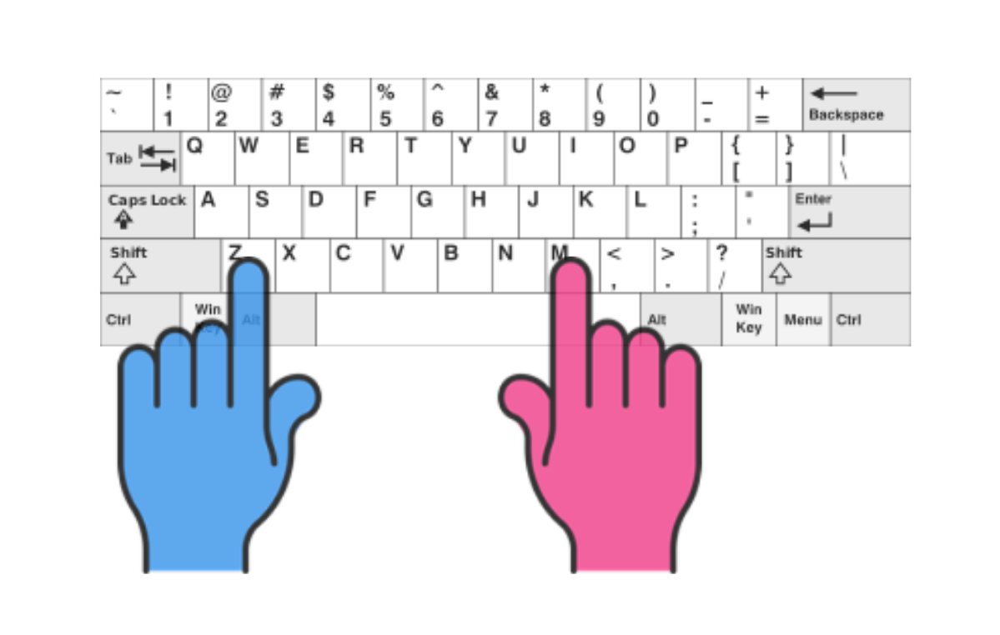
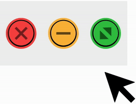
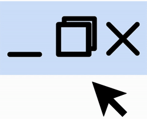
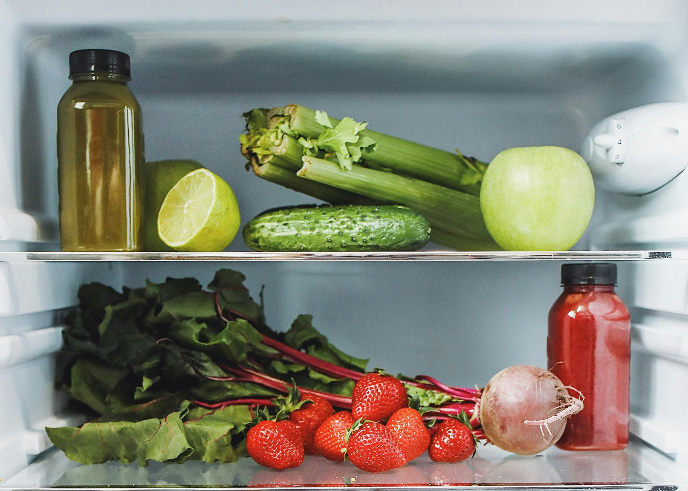
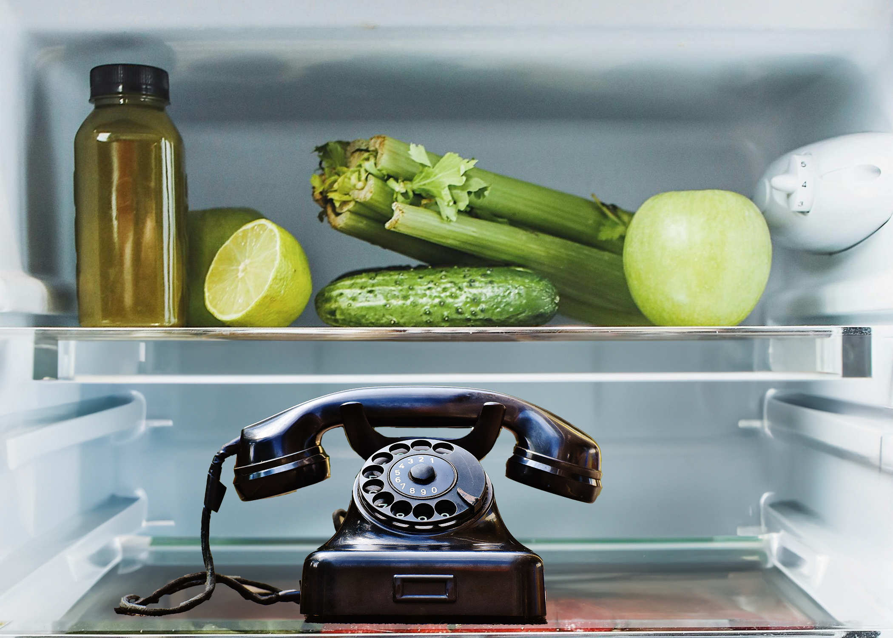

<!DOCTYPE html>

<html>
<head>
<title>Verbal judgement</title>
<script src="../jspsych.js"></script>
<script src="../plugin-preload.js"></script>
<script src="../plugin-html-keyboard-response.js"></script>
<script src="../plugin-html-button-response.js"></script>
<script src="../plugin-survey-html-form.js"></script>
<script src="../plugin-survey.js"></script>
<script src="order24aB_script.js"></script>
<link href="../jspsych.css" rel="stylesheet"/>
<link href="https://unpkg.com/@jspsych/plugin-survey@0.1.1/css/survey.css" rel="stylesheet"/>
<script src="https://ajax.googleapis.com/ajax/libs/jquery/2.2.4/jquery.min.js"></script>
</head>
<body>
</body>
<script>
    

  function saveData(name, data){
  var xhr = new XMLHttpRequest();
  xhr.open('POST', 'SavePHP.php'); // 'write_data.php' is the path to the php file described above.
  xhr.setRequestHeader('Content-Type', 'application/json');
  xhr.send(JSON.stringify({filedata: data}));
  xhr.onreadystatechange = function() {
        if (this.readyState == 4 ) {
            console.log(this.responseText);
        }
    };
}


// call the saveData function after the experiment is over
initJsPsych({
   on_finish: function(){ saveData(jsPsych.data.get().csv()); }
});

var jsPsych = initJsPsych (
    {show_progress_bar: true,
        on_finish: function () {
        saveData(name + '.csv', jsPsych.data.get().csv());
        }
    })


      var timeline = [];

      var preload = {
    type: jsPsychPreload,
    images: ['../practice2.png',
    '../SAMPLE.png',
    '../Consent Statement for Research-1.jpg',
    '../practice1.png',  
    '../practice1MASK.png', 
    '../tutorial1.png',
    '../tutorial2.png',
    '../test1.png', 
    '../test2.png',
    '../test3.png',
    '../test4.png',
    '../Test5.png',
    '../Test6.png',
    '../Test7.png',
    '../test8.png',
    '../test9.png',
    '../test10.png',
    '../test1MASK.png', 
    '../test2MASK.png',
    '../test3MASK.png',
    '../test4MASK.png',
    '../Test5MASK.png',
    '../Test6MASK.png',
    '../Test7MASK.png',
    '../test8MASK.png',
    '../test9MASK.png',
    '../test10MASK.png',
    '../practice2MASK.png',
    '../KeyboardInstructions.png']
};
      var welcome = {
          type: jsPsychHtmlKeyboardResponse,
          stimulus: "<p>Thank you for accepting this experiment! Press any key to begin<p>"
      };

      //consent
      var consent = {
        type: jsPsychHtmlButtonResponse,
  stimulus: "<p style='font-size: 15px'>Do you consent to the following experiment? If you do not, please close this browser window now, and return the experiment. If you do, scroll down to the 'agree' button.</p>",
  choices: ['Agree']
      };
    /*  var Correct = {
     type:jsPsychHtmlKeyboardResponse,
     prompt: '<p> Correct! Response recorded</p>',
     stimulus: '<p style=font-size:48px;color:#1a851a;><br><br>+<br><br></p>', 
     choices:'NO_KEYS', 
     stimulus_duration:1500, 
     trial_duration:1500, 
     response_ends_trial:false};

     var Incorrect = {
     type:jsPsychHtmlKeyboardResponse,
      prompt: '<p> Incorrect! Response recorded</p>',
     stimulus: '<p style=font-size:48px;color:#1a851a;><br><br>+<br><br></p>', 
     choices:'NO_KEYS', 
     stimulus_duration:1500, 
     trial_duration:1500, 
     response_ends_trial:false
     }
     var NoChoice = {
     type:jsPsychHtmlKeyboardResponse,
      prompt: '<p> No response recorded</p>',
     stimulus: '<p style=font-size:48px;color:#1a851a;><br><br>+<br><br></p>', 
     choices:'NO_KEYS', 
     stimulus_duration:1500, 
     trial_duration:1500, 
     response_ends_trial:false
   };
*/

    //instructions
    var instructions = {
      type: jsPsychHtmlKeyboardResponse,
      stimulus: "<p>You are going to be asked to make a judgement on a series of words or pseudowords.\
         <p><br><b>Please press 'm' if it is a word, and 'z' if it is not.</b><br>\
         <p><table style='margin-left:auto;margin-right:auto;'>\
            <tr>\
              <th>Real word</th>\
              <th style='color:white'>---------------</th>\
              <th>Psuedoword</th>\
              </tr>\
              <tr>\
            <td>NEUTRAL</td>\
            <td style='color:white'>---------------</td>\
            <td>LEUTRAN</td>\
              </tr>\
              <tr>\
                <td> </td>\
                <td> </td>\
                <td> </td>\
              <tr>\
            <td>Press 'm'</td>\
            <td style='color:white'>---------------</td>\
            <td>Press 'z'</td>\
              </tr></p>\
              <p>A<span style = 'color:red;'> RED </span>fixation cross means your response has not yet been recorded.</p>\
              <p>A<span style = 'color:#1a851a'> GREEN </span>fixation cross means your response has been recorded.</p>",
        prompt: "<br><b>Press enter to continue.</b><p>",
      choices: ['Enter'],
    };

    var fingerinstructions = {
      type: jsPsychHtmlKeyboardResponse,
      stimulus: "<p>When responding, please place one finger on each key.</p><p> Your left hand pointer finger should be <b>above the 'Z' key</b>, and your right hand pointer finger should be <b>above the 'M' Key.</b></p><p></p><p>Further, for the experiment to perform correctly, <b>your browser window must be maximized.</b></p>",
      choices: ['Enter'],
    };

    var windowinstructions = {
      type: jsPsychHtmlKeyboardResponse,
      stimulus: "<p>To maximize your window\
                <br><br>\
         <p><table style='margin-left:auto;margin-right:auto;'>\
            <tr>\
            <th>On a Mac or Apple device</th>\
              <th style='color:white'>---------------</th>\
              <th>On a PC or Windows device</th>\
              </tr>\
              <tr>\
            <td>Select the third and green button on the upper left corner of your browser window</td>\
            <td style='color:white'>---------------</td>\
            <td>Select the second button on the upper right corner of your browser window.</td>\
              </tr>\
              <tr>\
                <td> </td>\
                <td> </td>\
                <td> </td>\
              <tr>\
            <td></td>\
            <td style='color:white'>---------------</td>\
            <td></td>\
            </tr>\
            <tr>\
             <td style='color:white'>---------------</td>\
            <td style='text-align:center'><b>Press enter to continue</b></td>\
            <td style='color:white'>---------------</td>\
              </tr></p>",
      choices: ['Enter'],
      prompt: "<br><b>Press enter to continue.</b><p>",
    };

    /*var imageinstructions = {
      type: jsPsychHtmlKeyboardResponse,
      stimulus: "<p>Several trials will consist of you making a judgement on an image instead. Key responses will remain the same.</p>\
      <p>You must be correct on <b>all image trials during the experiment</b>.</p>\
         <p><br><b>Please press 'z' if it is a valid image, and 'm' if it is not.</b><br>\
         <p><table style='margin-left:auto;margin-right:auto;'>\
            <tr>\
              <th>Valid image</th>\
              <th style='color:white'>---------------</th>\
              <th>Invalid image</th>\
              </tr>\
              <tr>\
            <td>All items belong in a fridge</td>\
            <td style='color:white'>---------------</td>\
            <td>Some items do not belong in a fridge</td>\
              </tr>\
              <tr>\
                <tr>\
            <td>Press 'z'</td>\
            <td style='color:white'>---------------</td>\
            <td>'Press 'm'</td>\
              </tr>\
              <tr>\
                <td> </td>\
                <td> </td>\
                <td> </td>\
              <tr>\
            <td></td>\
            <td style='color:white'>---------------</td>\
            <td></td>\
              </tr></p>\
              <tr>\
                <td><br></td>\
                <td> </td>\
                <td> </td>\
              <tr>\
              <tr>\
                <td></td>\
            <td style='text-align:center'><b>Press enter to continue</b></td>\
            <td style='color:white'>---------------</td>\
            <td></td>\
              </tr></p>\
              <p></p>\
              <p></p>",
        prompt: "<p></p>",
      choices: ['Enter'],
    };

   var imagetrialexplanation = {
      type: jsPsychHtmlKeyboardResponse,
      stimulus: "<p>Image judgement trials will <b>NOT</b> have a word present</p>\
                <p>The instructions will remind you this is an image trial and how to respond to the image.</p>\
                <p><b>Pay close attention!</b> These trials will appear randomly, and you must have all of them correct to receive credit for your participation.</p>\
                <p>Press enter to continue</p>",
      choices: ['Enter']
    };*/

    var practice = {
      type: jsPsychHtmlKeyboardResponse,
      stimulus: "For the practice trials only, you will be told the correct answer. Trials will move on <b>automatically.</b><br><br>You will have <b>2.5 seconds</b> to respond.<br><br> Please move as <b>quickly and as accurately</b> as possible.<br><br>Press enter to begin.",
      choices: ['Enter']
    };

    var fixation = {
      type: jsPsychHtmlKeyboardResponse,
      stimulus: "<p>Please look at the fixation cross. This is where the words will appear.</p><p style='color:red;font-size:48px;''>+<br><br></p></p><p><b>Press enter to begin the trials</b></b><p>",
      choices: ['Enter'],
      post_trial_gap: 2000
    };

  /*  var practiceTrialIntroFixation ={
      type:jsPsychHtmlKeyboardResponse,
      stimulus: '<p style=font-size:48px;><br><br>+<br><br></p>', 
      choices:'ALL_KEYS', 
      stimulus_duration:500, 
      trial_duration:500, 
      response_ends_trial:false, 
      prompt:'<p>Press M for a real word, press Z for a pseudoword</p>',
    };*/

    /*
      if
    */
 /*   var pre_if_trial = {
    type: jsPsychHtmlKeyboardResponse,
    timeline: [{stimulus: '<p style=font-size:48px;><br><br>+<br><br></p>', choices:'ALL_KEYS', stimulus_duration:500, trial_duration:500, response_ends_trial:false, prompt:'<p>Press M for a real word, press Z for a pseudoword</p>'},	{prompt:'<p>Press M for a real word, press Z for a pseudoword</p>', stimulus: '<p style="font-size:48px;"><br><br>KURNT<br><br></p>',	stimulus_duration:500, trial_duration: 500, choices:'ALL_KEYS',response_ends_trial:false}],
}

var if_trial = {
    type: jsPsychHtmlKeyboardResponse,
    timeline: [{prompt:'<p>Press M for a real word, press Z for a pseudoword</p>', stimulus: '<p style=font-size:48px;><br><br>	#####	<br><br></p>', stimulus_duration: 500, trial_duration: 500, choices:['z','m'], response_ends_trial: false},{stimulus: '<p style=font-size:48px;color:red;><br><br>+<br><br></p>', choices:'ALL_KEYS', stimulus_duration:2500, trial_duration:2500, response_ends_trial:true,  prompt:'<p>Press M for a real word, press Z for a pseudoword</p>'}],
}

var if_node = {
    timeline: [if_trial],
    conditional_function: function(){
        // get the data from the previous trial,
        // and check which key was pressed
        var data = jsPsych.data.get().last(1).values()[0];
        if(jsPsych.pluginAPI.compareKeys(data.response, 'z')){
            return false;
        } 
        else if (jsPsych.pluginAPI.compareKeys(data.response, 'm')){
            return false;
        } else {
            return true;
        }
    }
}

var after_if_trial = {
    type: jsPsychHtmlKeyboardResponse,
    timeline: [{prompt: '<p>Response recorded. Correct answer was <b>M - Pseudoword</b></p>',stimulus: '<p style=font-size:48px;color:#1a851a;><br><br>+<br><br></p>', choices:'NO_KEYS', stimulus_duration:2500, trial_duration:2500, response_ends_trial:false}],

}
*/


var	pre_if_Practicetrial1	= {
    type: jsPsychHtmlKeyboardResponse,
    timeline: [{stimulus: '<p style=font-size:48px;><br><br>+<br><br></p>', choices:'ALL_KEYS', stimulus_duration:500, trial_duration:500, response_ends_trial:false, prompt:'<p>Press M for a real word, press Z for a pseudoword</p>'},	{prompt:'<p>Press M for a real word, press Z for a pseudoword</p>', stimulus: '<p style="font-size:48px;"><br><br>	KURNT	<br><br></p>',	stimulus_duration:500, trial_duration: 500, choices:'ALL_KEYS',response_ends_trial:false}, {prompt:'<p>Press M for a real word, press Z for a pseudoword</p>', stimulus: '<p style=font-size:48px;><br><br>	#####	<br><br></p>', stimulus_duration: 500, trial_duration: 500, choices:['z','m'], response_ends_trial: false}],
}	;	var	if_trialPractice1	= {
    type: jsPsychHtmlKeyboardResponse,
    timeline: [{stimulus: '<p style=font-size:48px;color:red;><br><br>+<br><br></p>', choices:'ALL_KEYS', stimulus_duration:2500, trial_duration:2500, response_ends_trial:true,  prompt:'<p>Press M for a real word, press Z for a pseudoword</p>'}],
}	;	var	if_nodeP1	= {
    timeline: [if_trialPractice1],
    conditional_function: function(){
        // get the data from the previous trial,
        // and check which key was pressed
        var data = jsPsych.data.get().last(1).values()[0];
        if(jsPsych.pluginAPI.compareKeys(data.response, 'z')){
            return false;
        } 
        else if (jsPsych.pluginAPI.compareKeys(data.response, 'm')){
            return false;
        } else {
            return true;
        }
    }
  }	;	var	after_if_trialP1	= {
    type: jsPsychHtmlKeyboardResponse,
    timeline: [{prompt: '<p>Response recorded. Correct answer was <b>	Z - Pseudoword	</b></p>',stimulus: '<p style=font-size:48px;color:#1a851a;><br><br>+<br><br></p>', choices:'NO_KEYS', stimulus_duration:2500, trial_duration:2500, response_ends_trial:false}]
    }
var	pre_if_Practicetrial2	= {
    type: jsPsychHtmlKeyboardResponse,
    timeline: [{stimulus: '<p style=font-size:48px;><br><br>+<br><br></p>', choices:'ALL_KEYS', stimulus_duration:500, trial_duration:500, response_ends_trial:false, prompt:'<p>Press M for a real word, press Z for a pseudoword</p>'},	{prompt:'<p>Press M for a real word, press Z for a pseudoword</p>', stimulus: '<p style="font-size:48px;"><br><br>	KEDU	<br><br></p>',	stimulus_duration:500, trial_duration: 500, choices:'ALL_KEYS',response_ends_trial:false}, {prompt:'<p>Press M for a real word, press Z for a pseudoword</p>', stimulus: '<p style=font-size:48px;><br><br>	####	<br><br></p>', stimulus_duration: 500, trial_duration: 500, choices:['z','m'], response_ends_trial: false}],
}	;	var	if_trialPractice2	= {
    type: jsPsychHtmlKeyboardResponse,
    timeline: [{stimulus: '<p style=font-size:48px;color:red;><br><br>+<br><br></p>', choices:'ALL_KEYS', stimulus_duration:2500, trial_duration:2500, response_ends_trial:true,  prompt:'<p>Press M for a real word, press Z for a pseudoword</p>'}],
}	;	var	if_nodeP2	= {
    timeline: [if_trialPractice2],
    conditional_function: function(){
        // get the data from the previous trial,
        // and check which key was pressed
        var data = jsPsych.data.get().last(1).values()[0];
        if(jsPsych.pluginAPI.compareKeys(data.response, 'z')){
            return false;
        } 
        else if (jsPsych.pluginAPI.compareKeys(data.response, 'm')){
            return false;
        } else {
            return true;
        }
    }
  }	;	var	after_if_trialP2	= {
    type: jsPsychHtmlKeyboardResponse,
    timeline: [{prompt: '<p>Response recorded. Correct answer was <b>	Z - Pseudoword	</b></p>',stimulus: '<p style=font-size:48px;color:#1a851a;><br><br>+<br><br></p>', choices:'NO_KEYS', stimulus_duration:2500, trial_duration:2500, response_ends_trial:false}]
    }
var	pre_if_Practicetrial3	= {
    type: jsPsychHtmlKeyboardResponse,
    timeline: [{stimulus: '<p style=font-size:48px;><br><br>+<br><br></p>', choices:'ALL_KEYS', stimulus_duration:500, trial_duration:500, response_ends_trial:false, prompt:'<p>Press M for a real word, press Z for a pseudoword</p>'},	{prompt:'<p>Press M for a real word, press Z for a pseudoword</p>', stimulus: '<p style="font-size:48px;"><br><br>	COAST	<br><br></p>',	stimulus_duration:500, trial_duration: 500, choices:'ALL_KEYS',response_ends_trial:false}, {prompt:'<p>Press M for a real word, press Z for a pseudoword</p>', stimulus: '<p style=font-size:48px;><br><br>	#####	<br><br></p>', stimulus_duration: 500, trial_duration: 500, choices:['z','m'], response_ends_trial: false}],
}	;	var	if_trialPractice3	= {
    type: jsPsychHtmlKeyboardResponse,
    timeline: [{stimulus: '<p style=font-size:48px;color:red;><br><br>+<br><br></p>', choices:'ALL_KEYS', stimulus_duration:2500, trial_duration:2500, response_ends_trial:true,  prompt:'<p>Press M for a real word, press Z for a pseudoword</p>'}],
}	;	var	if_nodeP3	= {
    timeline: [if_trialPractice3],
    conditional_function: function(){
        // get the data from the previous trial,
        // and check which key was pressed
        var data = jsPsych.data.get().last(1).values()[0];
        if(jsPsych.pluginAPI.compareKeys(data.response, 'z')){
            return false;
        } 
        else if (jsPsych.pluginAPI.compareKeys(data.response, 'm')){
            return false;
        } else {
            return true;
        }
    }
  }	;	var	after_if_trialP3	= {
    type: jsPsychHtmlKeyboardResponse,
    timeline: [{prompt: '<p>Response recorded. Correct answer was <b>	M - Real word	</b></p>',stimulus: '<p style=font-size:48px;color:#1a851a;><br><br>+<br><br></p>', choices:'NO_KEYS', stimulus_duration:2500, trial_duration:2500, response_ends_trial:false}]
    }
var	pre_if_Practicetrial4	= {
    type: jsPsychHtmlKeyboardResponse,
    timeline: [{stimulus: '<p style=font-size:48px;><br><br>+<br><br></p>', choices:'ALL_KEYS', stimulus_duration:500, trial_duration:500, response_ends_trial:false, prompt:'<p>Press M for a real word, press Z for a pseudoword</p>'},	{prompt:'<p>Press M for a real word, press Z for a pseudoword</p>', stimulus: '<p style="font-size:48px;"><br><br>	PRATTNE	<br><br></p>',	stimulus_duration:500, trial_duration: 500, choices:'ALL_KEYS',response_ends_trial:false}, {prompt:'<p>Press M for a real word, press Z for a pseudoword</p>', stimulus: '<p style=font-size:48px;><br><br>	#######	<br><br></p>', stimulus_duration: 500, trial_duration: 500, choices:['z','m'], response_ends_trial: false}],
}	;	var	if_trialPractice4	= {
    type: jsPsychHtmlKeyboardResponse,
    timeline: [{stimulus: '<p style=font-size:48px;color:red;><br><br>+<br><br></p>', choices:'ALL_KEYS', stimulus_duration:2500, trial_duration:2500, response_ends_trial:true,  prompt:'<p>Press M for a real word, press Z for a pseudoword</p>'}],
}	;	var	if_nodeP4	= {
    timeline: [if_trialPractice4],
    conditional_function: function(){
        // get the data from the previous trial,
        // and check which key was pressed
        var data = jsPsych.data.get().last(1).values()[0];
        if(jsPsych.pluginAPI.compareKeys(data.response, 'z')){
            return false;
        } 
        else if (jsPsych.pluginAPI.compareKeys(data.response, 'm')){
            return false;
        } else {
            return true;
        }
    }
  }	;	var	after_if_trialP4	= {
    type: jsPsychHtmlKeyboardResponse,
    timeline: [{prompt: '<p>Response recorded. Correct answer was <b>	Z - Pseudoword	</b></p>',stimulus: '<p style=font-size:48px;color:#1a851a;><br><br>+<br><br></p>', choices:'NO_KEYS', stimulus_duration:2500, trial_duration:2500, response_ends_trial:false}]
    }
    var	pre_if_imagetrial1	= {
    type: jsPsychHtmlKeyboardResponse,
    timeline: [{stimulus: '<p style=font-size:48px;><br><br>+<br><br></p>', choices:'ALL_KEYS', stimulus_duration:500, trial_duration:500, response_ends_trial:false, prompt:'<p>Press M for a real word, press Z for a pseudoword</p>'},	{prompt:'<p>Press M for a real word, press Z for a pseudoword</p>', stimulus: '<p></p>',	stimulus_duration:500, trial_duration: 500, choices:'ALL_KEYS',response_ends_trial:false}, {prompt:'<p>Press M for a real word, press Z for a pseudoword</p>', stimulus: '</p>', stimulus_duration: 500, trial_duration: 500, choices:['z','m'], response_ends_trial: false}],
}	;	var	if_trialimagetrial1	= {
    type: jsPsychHtmlKeyboardResponse,
    timeline: [{stimulus: '<p style=font-size:48px;color:red;><br><br>+<br><br></p>', choices:'ALL_KEYS', stimulus_duration:2500, trial_duration:2500, response_ends_trial:true,  prompt:'<p>Press M for a real word, press Z for a pseudoword</p>'}],
}	;	var	if_nodetrialimage1	= {
    timeline: [if_trialimagetrial1],
    conditional_function: function(){
        // get the data from the previous trial,
        // and check which key was pressed
        var data = jsPsych.data.get().last(1).values()[0];
        if(jsPsych.pluginAPI.compareKeys(data.response, 'z')){
            return false;
        } 
        else if (jsPsych.pluginAPI.compareKeys(data.response, 'm')){
            return false;
        } else {
            return true;
        }
    }
  }	;	var	after_if_imagetrial1	= {
    type: jsPsychHtmlKeyboardResponse,
    timeline: [{prompt: '<p>Response recorded. Correct answer was <b>	Z - Pseudoword	</b></p>',stimulus: '<p style=font-size:48px;color:#1a851a;><br><br>+<br><br></p>', choices:'NO_KEYS', stimulus_duration:2500, trial_duration:2500, response_ends_trial:false}]
    }
var	pre_if_Practicetrial5	= {
    type: jsPsychHtmlKeyboardResponse,
    timeline: [{stimulus: '<p style=font-size:48px;><br><br>+<br><br></p>', choices:'ALL_KEYS', stimulus_duration:500, trial_duration:500, response_ends_trial:false, prompt:'<p>Press M for a real word, press Z for a pseudoword</p>'},	{prompt:'<p>Press M for a real word, press Z for a pseudoword</p>', stimulus: '<p style="font-size:48px;"><br><br>	NEWS	<br><br></p>',	stimulus_duration:500, trial_duration: 500, choices:'ALL_KEYS',response_ends_trial:false}, {prompt:'<p>Press M for a real word, press Z for a pseudoword</p>', stimulus: '<p style=font-size:48px;><br><br>	####	<br><br></p>', stimulus_duration: 500, trial_duration: 500, choices:['z','m'], response_ends_trial: false}],
}	;	var	if_trialPractice5	= {
    type: jsPsychHtmlKeyboardResponse,
    timeline: [{stimulus: '<p style=font-size:48px;color:red;><br><br>+<br><br></p>', choices:'ALL_KEYS', stimulus_duration:2500, trial_duration:2500, response_ends_trial:true,  prompt:'<p>Press M for a real word, press Z for a pseudoword</p>'}],
}	;	var	if_nodeP5	= {
    timeline: [if_trialPractice5],
    conditional_function: function(){
        // get the data from the previous trial,
        // and check which key was pressed
        var data = jsPsych.data.get().last(1).values()[0];
        if(jsPsych.pluginAPI.compareKeys(data.response, 'z')){
            return false;
        } 
        else if (jsPsych.pluginAPI.compareKeys(data.response, 'm')){
            return false;
        } else {
            return true;
        }
    }
  }	;	var	after_if_trialP5	= {
    type: jsPsychHtmlKeyboardResponse,
    timeline: [{prompt: '<p>Response recorded. Correct answer was <b>	M - Real word	</b></p>',stimulus: '<p style=font-size:48px;color:#1a851a;><br><br>+<br><br></p>', choices:'NO_KEYS', stimulus_duration:2500, trial_duration:2500, response_ends_trial:false}]
    }
var	pre_if_Practicetrial6	= {
    type: jsPsychHtmlKeyboardResponse,
    timeline: [{stimulus: '<p style=font-size:48px;><br><br>+<br><br></p>', choices:'ALL_KEYS', stimulus_duration:500, trial_duration:500, response_ends_trial:false, prompt:'<p>Press M for a real word, press Z for a pseudoword</p>'},	{prompt:'<p>Press M for a real word, press Z for a pseudoword</p>', stimulus: '<p style="font-size:48px;"><br><br>	MOVIE	<br><br></p>',	stimulus_duration:500, trial_duration: 500, choices:'ALL_KEYS',response_ends_trial:false}, {prompt:'<p>Press M for a real word, press Z for a pseudoword</p>', stimulus: '<p style=font-size:48px;><br><br>	#####	<br><br></p>', stimulus_duration: 500, trial_duration: 500, choices:['z','m'], response_ends_trial: false}],
}	;	var	if_trialPractice6	= {
    type: jsPsychHtmlKeyboardResponse,
    timeline: [{stimulus: '<p style=font-size:48px;color:red;><br><br>+<br><br></p>', choices:'ALL_KEYS', stimulus_duration:2500, trial_duration:2500, response_ends_trial:true,  prompt:'<p>Press M for a real word, press Z for a pseudoword</p>'}],
}	;	var	if_nodeP6	= {
    timeline: [if_trialPractice6],
    conditional_function: function(){
        // get the data from the previous trial,
        // and check which key was pressed
        var data = jsPsych.data.get().last(1).values()[0];
        if(jsPsych.pluginAPI.compareKeys(data.response, 'z')){
            return false;
        } 
        else if (jsPsych.pluginAPI.compareKeys(data.response, 'm')){
            return false;
        } else {
            return true;
        }
    }
  }	;	var	after_if_trialP6	= {
    type: jsPsychHtmlKeyboardResponse,
    timeline: [{prompt: '<p>Response recorded. Correct answer was <b>	M - Real word	</b></p>',stimulus: '<p style=font-size:48px;color:#1a851a;><br><br>+<br><br></p>', choices:'NO_KEYS', stimulus_duration:2500, trial_duration:2500, response_ends_trial:false}]
    }
var	pre_if_Practicetrial7	= {
    type: jsPsychHtmlKeyboardResponse,
    timeline: [{stimulus: '<p style=font-size:48px;><br><br>+<br><br></p>', choices:'ALL_KEYS', stimulus_duration:500, trial_duration:500, response_ends_trial:false, prompt:'<p>Press M for a real word, press Z for a pseudoword</p>'},	{prompt:'<p>Press M for a real word, press Z for a pseudoword</p>', stimulus: '<p style="font-size:48px;"><br><br>	WOT	<br><br></p>',	stimulus_duration:500, trial_duration: 500, choices:'ALL_KEYS',response_ends_trial:false}, {prompt:'<p>Press M for a real word, press Z for a pseudoword</p>', stimulus: '<p style=font-size:48px;><br><br>	###	<br><br></p>', stimulus_duration: 500, trial_duration: 500, choices:['z','m'], response_ends_trial: false}],
}	;	var	if_trialPractice7	= {
    type: jsPsychHtmlKeyboardResponse,
    timeline: [{stimulus: '<p style=font-size:48px;color:red;><br><br>+<br><br></p>', choices:'ALL_KEYS', stimulus_duration:2500, trial_duration:2500, response_ends_trial:true,  prompt:'<p>Press M for a real word, press Z for a pseudoword</p>'}],
}	;	var	if_nodeP7	= {
    timeline: [if_trialPractice7],
    conditional_function: function(){
        // get the data from the previous trial,
        // and check which key was pressed
        var data = jsPsych.data.get().last(1).values()[0];
        if(jsPsych.pluginAPI.compareKeys(data.response, 'z')){
            return false;
        } 
        else if (jsPsych.pluginAPI.compareKeys(data.response, 'm')){
            return false;
        } else {
            return true;
        }
    }
  }	;	var	after_if_trialP7	= {
    type: jsPsychHtmlKeyboardResponse,
    timeline: [{prompt: '<p>Response recorded. Correct answer was <b>	Z - Pseudoword	</b></p>',stimulus: '<p style=font-size:48px;color:#1a851a;><br><br>+<br><br></p>', choices:'NO_KEYS', stimulus_duration:2500, trial_duration:2500, response_ends_trial:false}]
    }
var	pre_if_Practicetrial8	= {
    type: jsPsychHtmlKeyboardResponse,
    timeline: [{stimulus: '<p style=font-size:48px;><br><br>+<br><br></p>', choices:'ALL_KEYS', stimulus_duration:500, trial_duration:500, response_ends_trial:false, prompt:'<p>Press M for a real word, press Z for a pseudoword</p>'},	{prompt:'<p>Press M for a real word, press Z for a pseudoword</p>', stimulus: '<p style="font-size:48px;"><br><br>	BOW	<br><br></p>',	stimulus_duration:500, trial_duration: 500, choices:'ALL_KEYS',response_ends_trial:false}, {prompt:'<p>Press M for a real word, press Z for a pseudoword</p>', stimulus: '<p style=font-size:48px;><br><br>	###	<br><br></p>', stimulus_duration: 500, trial_duration: 500, choices:['z','m'], response_ends_trial: false}],
}	;	var	if_trialPractice8	= {
    type: jsPsychHtmlKeyboardResponse,
    timeline: [{stimulus: '<p style=font-size:48px;color:red;><br><br>+<br><br></p>', choices:'ALL_KEYS', stimulus_duration:2500, trial_duration:2500, response_ends_trial:true,  prompt:'<p>Press M for a real word, press Z for a pseudoword</p>'}],
}	;	var	if_nodeP8	= {
    timeline: [if_trialPractice8],
    conditional_function: function(){
        // get the data from the previous trial,
        // and check which key was pressed
        var data = jsPsych.data.get().last(1).values()[0];
        if(jsPsych.pluginAPI.compareKeys(data.response, 'z')){
            return false;
        } 
        else if (jsPsych.pluginAPI.compareKeys(data.response, 'm')){
            return false;
        } else {
            return true;
        }
    }
  }	;	var	after_if_trialP8	= {
    type: jsPsychHtmlKeyboardResponse,
    timeline: [{prompt: '<p>Response recorded. Correct answer was <b>	M - Real word	</b></p>',stimulus: '<p style=font-size:48px;color:#1a851a;><br><br>+<br><br></p>', choices:'NO_KEYS', stimulus_duration:2500, trial_duration:2500, response_ends_trial:false}]
    }
var	pre_if_Practicetrial9	= {
    type: jsPsychHtmlKeyboardResponse,
    timeline: [{stimulus: '<p style=font-size:48px;><br><br>+<br><br></p>', choices:'ALL_KEYS', stimulus_duration:500, trial_duration:500, response_ends_trial:false, prompt:'<p>Press M for a real word, press Z for a pseudoword</p>'},	{prompt:'<p>Press M for a real word, press Z for a pseudoword</p>', stimulus: '<p style="font-size:48px;"><br><br>	CANPI	<br><br></p>',	stimulus_duration:500, trial_duration: 500, choices:'ALL_KEYS',response_ends_trial:false}, {prompt:'<p>Press M for a real word, press Z for a pseudoword</p>', stimulus: '<p style=font-size:48px;><br><br>	#####	<br><br></p>', stimulus_duration: 500, trial_duration: 500, choices:['z','m'], response_ends_trial: false}],
}	;	var	if_trialPractice9	= {
    type: jsPsychHtmlKeyboardResponse,
    timeline: [{stimulus: '<p style=font-size:48px;color:red;><br><br>+<br><br></p>', choices:'ALL_KEYS', stimulus_duration:2500, trial_duration:2500, response_ends_trial:true,  prompt:'<p>Press M for a real word, press Z for a pseudoword</p>'}],
}	;	var	if_nodeP9	= {
    timeline: [if_trialPractice9],
    conditional_function: function(){
        // get the data from the previous trial,
        // and check which key was pressed
        var data = jsPsych.data.get().last(1).values()[0];
        if(jsPsych.pluginAPI.compareKeys(data.response, 'z')){
            return false;
        } 
        else if (jsPsych.pluginAPI.compareKeys(data.response, 'm')){
            return false;
        } else {
            return true;
        }
    }
  }	;	var	after_if_trialP9	= {
    type: jsPsychHtmlKeyboardResponse,
    timeline: [{prompt: '<p>Response recorded. Correct answer was <b>	Z - Pseudoword	</b></p>',stimulus: '<p style=font-size:48px;color:#1a851a;><br><br>+<br><br></p>', choices:'NO_KEYS', stimulus_duration:2500, trial_duration:2500, response_ends_trial:false}]
    }
var	pre_if_Practicetrial10	= {
    type: jsPsychHtmlKeyboardResponse,
    timeline: [{stimulus: '<p style=font-size:48px;><br><br>+<br><br></p>', choices:'ALL_KEYS', stimulus_duration:500, trial_duration:500, response_ends_trial:false, prompt:'<p>Press M for a real word, press Z for a pseudoword</p>'},	{prompt:'<p>Press M for a real word, press Z for a pseudoword</p>', stimulus: '<p style="font-size:48px;"><br><br>	HIGHWAY	<br><br></p>',	stimulus_duration:500, trial_duration: 500, choices:'ALL_KEYS',response_ends_trial:false}, {prompt:'<p>Press M for a real word, press Z for a pseudoword</p>', stimulus: '<p style=font-size:48px;><br><br>	#######	<br><br></p>', stimulus_duration: 500, trial_duration: 500, choices:['z','m'], response_ends_trial: false}],
}	;	var	if_trialPractice10	= {
    type: jsPsychHtmlKeyboardResponse,
    timeline: [{stimulus: '<p style=font-size:48px;color:red;><br><br>+<br><br></p>', choices:'ALL_KEYS', stimulus_duration:2500, trial_duration:2500, response_ends_trial:true,  prompt:'<p>Press M for a real word, press Z for a pseudoword</p>'}],
}	;	var	if_nodeP10	= {
    timeline: [if_trialPractice10],
    conditional_function: function(){
        // get the data from the previous trial,
        // and check which key was pressed
        var data = jsPsych.data.get().last(1).values()[0];
        if(jsPsych.pluginAPI.compareKeys(data.response, 'z')){
            return false;
        } 
        else if (jsPsych.pluginAPI.compareKeys(data.response, 'm')){
            return false;
        } else {
            return true;
        }
    }
  }	;	var	after_if_trialP10	= {
    type: jsPsychHtmlKeyboardResponse,
    timeline: [{prompt: '<p>Response recorded. Correct answer was <b>	M - Real word	</b></p>',stimulus: '<p style=font-size:48px;color:#1a851a;><br><br>+<br><br></p>', choices:'NO_KEYS', stimulus_duration:2500, trial_duration:2500, response_ends_trial:false}]
    }
var	pre_if_Practicetrial11	= {
    type: jsPsychHtmlKeyboardResponse,
    timeline: [{stimulus: '<p style=font-size:48px;><br><br>+<br><br></p>', choices:'ALL_KEYS', stimulus_duration:500, trial_duration:500, response_ends_trial:false, prompt:'<p>Press M for a real word, press Z for a pseudoword</p>'},	{prompt:'<p>Press M for a real word, press Z for a pseudoword</p>', stimulus: '<p style="font-size:48px;"><br><br>	ADULT	<br><br></p>',	stimulus_duration:500, trial_duration: 500, choices:'ALL_KEYS',response_ends_trial:false}, {prompt:'<p>Press M for a real word, press Z for a pseudoword</p>', stimulus: '<p style=font-size:48px;><br><br>	#####	<br><br></p>', stimulus_duration: 500, trial_duration: 500, choices:['z','m'], response_ends_trial: false}],
}	;	var	if_trialPractice11	= {
    type: jsPsychHtmlKeyboardResponse,
    timeline: [{stimulus: '<p style=font-size:48px;color:red;><br><br>+<br><br></p>', choices:'ALL_KEYS', stimulus_duration:2500, trial_duration:2500, response_ends_trial:true,  prompt:'<p>Press M for a real word, press Z for a pseudoword</p>'}],
}	;	var	if_nodeP11	= {
    timeline: [if_trialPractice11],
    conditional_function: function(){
        // get the data from the previous trial,
        // and check which key was pressed
        var data = jsPsych.data.get().last(1).values()[0];
        if(jsPsych.pluginAPI.compareKeys(data.response, 'z')){
            return false;
        } 
        else if (jsPsych.pluginAPI.compareKeys(data.response, 'm')){
            return false;
        } else {
            return true;
        }
    }
  }	;	var	after_if_trialP11	= {
    type: jsPsychHtmlKeyboardResponse,
    timeline: [{prompt: '<p>Response recorded. Correct answer was <b>	M - Real word	</b></p>',stimulus: '<p style=font-size:48px;color:#1a851a;><br><br>+<br><br></p>', choices:'NO_KEYS', stimulus_duration:2500, trial_duration:2500, response_ends_trial:false}]
    }
    var	pre_if_imagetrial2	= {
    type: jsPsychHtmlKeyboardResponse,
    timeline: [{stimulus: '<p style=font-size:48px;><br><br>+<br><br></p>', choices:'ALL_KEYS', stimulus_duration:500, trial_duration:500, response_ends_trial:false, prompt:'<p>Press M for a real word, press Z for a pseudoword</p>'},	{prompt:'<p>Press M for a real word, press Z for a pseudoword</p>', stimulus: '<p></p>',	stimulus_duration:500, trial_duration: 500, choices:'ALL_KEYS',response_ends_trial:false}, {prompt:'<p>Press M for a real word, press Z for a pseudoword</p>', stimulus: '</p>', stimulus_duration: 500, trial_duration: 500, choices:['z','m'], response_ends_trial: false}],
}	;	var	if_trialimagetrial2	= {
    type: jsPsychHtmlKeyboardResponse,
    timeline: [{stimulus: '<p style=font-size:48px;color:red;><br><br>+<br><br></p>', choices:'ALL_KEYS', stimulus_duration:2500, trial_duration:2500, response_ends_trial:true,  prompt:'<p>Press M for a real word, press Z for a pseudoword</p>'}],
}	;	var	if_nodetrialimage2	= {
    timeline: [if_trialimagetrial2],
    conditional_function: function(){
        // get the data from the previous trial,
        // and check which key was pressed
        var data = jsPsych.data.get().last(1).values()[0];
        if(jsPsych.pluginAPI.compareKeys(data.response, 'z')){
            return false;
        } 
        else if (jsPsych.pluginAPI.compareKeys(data.response, 'm')){
            return false;
        } else {
            return true;
        }
    }
  }	;	var	after_if_imagetrial2	= {
    type: jsPsychHtmlKeyboardResponse,
    timeline: [{prompt: '<p>Response recorded. Correct answer was <b>	M - Real word	</b></p>',stimulus: '<p style=font-size:48px;color:#1a851a;><br><br>+<br><br></p>', choices:'NO_KEYS', stimulus_duration:2500, trial_duration:2500, response_ends_trial:false}]
    }
var	pre_if_Practicetrial12	= {
    type: jsPsychHtmlKeyboardResponse,
    timeline: [{stimulus: '<p style=font-size:48px;><br><br>+<br><br></p>', choices:'ALL_KEYS', stimulus_duration:500, trial_duration:500, response_ends_trial:false, prompt:'<p>Press M for a real word, press Z for a pseudoword</p>'},	{prompt:'<p>Press M for a real word, press Z for a pseudoword</p>', stimulus: '<p style="font-size:48px;"><br><br>	CHIRTUA	<br><br></p>',	stimulus_duration:500, trial_duration: 500, choices:'ALL_KEYS',response_ends_trial:false}, {prompt:'<p>Press M for a real word, press Z for a pseudoword</p>', stimulus: '<p style=font-size:48px;><br><br>	#######	<br><br></p>', stimulus_duration: 500, trial_duration: 500, choices:['z','m'], response_ends_trial: false}],
}	;	var	if_trialPractice12	= {
    type: jsPsychHtmlKeyboardResponse,
    timeline: [{stimulus: '<p style=font-size:48px;color:red;><br><br>+<br><br></p>', choices:'ALL_KEYS', stimulus_duration:2500, trial_duration:2500, response_ends_trial:true,  prompt:'<p>Press M for a real word, press Z for a pseudoword</p>'}],
}	;	var	if_nodeP12	= {
    timeline: [if_trialPractice12],
    conditional_function: function(){
        // get the data from the previous trial,
        // and check which key was pressed
        var data = jsPsych.data.get().last(1).values()[0];
        if(jsPsych.pluginAPI.compareKeys(data.response, 'z')){
            return false;
        } 
        else if (jsPsych.pluginAPI.compareKeys(data.response, 'm')){
            return false;
        } else {
            return true;
        }
    }
  }	;	var	after_if_trialP12	= {
    type: jsPsychHtmlKeyboardResponse,
    timeline: [{prompt: '<p>Response recorded. Correct answer was <b>	Z - Pseudoword	</b></p>',stimulus: '<p style=font-size:48px;color:#1a851a;><br><br>+<br><br></p>', choices:'NO_KEYS', stimulus_duration:2500, trial_duration:2500, response_ends_trial:false}]
    }


    

   /* var practiceTrial1 = {
    type: jsPsychHtmlKeyboardResponse,
    timeline: [{stimulus: '<p style=font-size:48px;><br><br>+<br><br></p>', choices:'ALL_KEYS', stimulus_duration:500, trial_duration:500, response_ends_trial:false, prompt:'<p>Press M for a real word, press Z for a pseudoword</p>'},	{prompt:'<p>Press M for a real word, press Z for a pseudoword</p>', stimulus: '<p style="font-size:48px;"><br><br>KURNT<br><br></p>',	stimulus_duration:500, trial_duration: 500, choices:'ALL_KEYS',response_ends_trial:false}],
    timeline: [{prompt:'<p>Press M for a real word, press Z for a pseudoword</p>', stimulus: '<p style=font-size:48px;><br><br>	#####	<br><br></p>', stimulus_duration: 500, trial_duration: 500, choices:['z','m'], response_ends_trial: false},{stimulus: '<p style=font-size:48px;color:red;><br><br>+<br><br></p>', choices:'ALL_KEYS', stimulus_duration:2500, trial_duration:2500, response_ends_trial:true,  prompt:'<p>Press M for a real word, press Z for a pseudoword</p>'}],
    timeline: [{prompt: '<p>Response recorded. Correct answer was <b>M - Pseudoword</b></p>',stimulus: '<p style=font-size:48px;color:#1a851a;><br><br>+<br><br></p>', choices:'NO_KEYS', stimulus_duration:2500, trial_duration:2500, response_ends_trial:false}],
    timeline: [{stimulus: '<p style=font-size:48px;><br><br>+<br><br></p>', choices:'ALL_KEYS', stimulus_duration:500, trial_duration:500, response_ends_trial:false, prompt:'<p>Press M for a real word, press Z for a pseudoword</p>'},	{prompt:'<p>Press M for a real word, press Z for a pseudoword</p>', stimulus: '<p style="font-size:48px;"><br><br>KEDU<br><br></p>',	stimulus_duration:500, trial_duration: 500, choices:'ALL_KEYS',response_ends_trial:false},	{prompt:'<p>Press M for a real word, press Z for a pseudoword</p>', stimulus: '<p style=font-size:48px;><br><br>	####	<br><br></p>', stimulus_duration: 500, trial_duration: 500, choices:['z','m'], response_ends_trial: false},{stimulus: '<p style=font-size:48px;color:red;><br><br>+<br><br></p>', choices:'ALL_KEYS', stimulus_duration:2500, trial_duration:2500, response_ends_trial:true,  prompt:'<p>Press M for a real word, press Z for a pseudoword</p>'},	{prompt: '<p>Response recorded. Correct answer was <b>M - Pseudoword</b></p>',stimulus: '<p style=font-size:48px;color:#1a851a;><br><br>+<br><br></p>', choices:'NO_KEYS', stimulus_duration:2500, trial_duration:2500, response_ends_trial:false},
{stimulus: '<p style=font-size:48px;><br><br>+<br><br></p>', choices:'ALL_KEYS', stimulus_duration:500, trial_duration:500, response_ends_trial:false, prompt:'<p>Press M for a real word, press Z for a pseudoword</p>'},	{prompt:'<p>Press M for a real word, press Z for a pseudoword</p>', stimulus: '<p style="font-size:48px;"><br><br>COAST<br><br></p>',	stimulus_duration:500, trial_duration: 500, choices:'ALL_KEYS',response_ends_trial:false},	{ prompt:'<p>Press M for a real word, press Z for a pseudoword</p>', stimulus: '<p style=font-size:48px;><br><br>	#####	<br><br></p>', stimulus_duration: 500, trial_duration: 500, choices:['z','m'], response_ends_trial: false},{stimulus: '<p style=font-size:48px;color:red;><br><br>+<br><br></p>', choices:'ALL_KEYS', stimulus_duration:2500, trial_duration:2500, response_ends_trial:true,  prompt:'<p>Press M for a real word, press Z for a pseudoword</p>'},	{prompt: '<p>Response recorded. Correct answer was <b>Z - Real Word</b></p>',stimulus: '<p style=font-size:48px;color:#1a851a;><br><br>+<br><br></p>', choices:'NO_KEYS', stimulus_duration:2500, trial_duration:2500, response_ends_trial:false},
{stimulus: '<p style=font-size:48px;><br><br>+<br><br></p>', choices:'ALL_KEYS', stimulus_duration:500, trial_duration:500, response_ends_trial:false, prompt:'<p>Press M for a real word, press Z for a pseudoword</p>'},	{prompt:'<p>Press M for a real word, press Z for a pseudoword</p>', stimulus: '<p style="font-size:48px;"><br><br>PRATTNE<br><br></p>',	stimulus_duration:500, trial_duration: 500, choices:'ALL_KEYS',response_ends_trial:false},	{prompt:'<p>Press M for a real word, press Z for a pseudoword</p>', stimulus: '<p style=font-size:48px;><br><br>	#######	<br><br></p>', stimulus_duration: 500, trial_duration: 500, choices:['z','m'], response_ends_trial: false},{stimulus: '<p style=font-size:48px;color:red;><br><br>+<br><br></p>', choices:'ALL_KEYS', stimulus_duration:2500, trial_duration:2500, response_ends_trial:true,  prompt:'<p>Press M for a real word, press Z for a pseudoword</p>'},	{prompt: '<p>Response recorded. Correct answer was <b>M - Pseudoword</b></p>',stimulus: '<p style=font-size:48px;color:#1a851a;><br><br>+<br><br></p>', choices:'NO_KEYS', stimulus_duration:2500, trial_duration:2500, response_ends_trial:false},
{stimulus: '<p style=font-size:48px;><br><br>+<br><br></p>', choices:'ALL_KEYS', stimulus_duration:500, trial_duration:500, response_ends_trial:false, prompt:'<p>Press M for a real word, press Z for a pseudoword</p>'},	{prompt:'<p>Press M for a real word, press Z for a pseudoword</p>', stimulus: '<p style="font-size:48px;"><br><br>NEWS<br><br></p>',	stimulus_duration:500, trial_duration: 500, choices:'ALL_KEYS',response_ends_trial:false},	{prompt:'<p>Press M for a real word, press Z for a pseudoword</p>', stimulus: '<p style=font-size:48px;><br><br>	####	<br><br></p>', stimulus_duration: 500, trial_duration: 500, choices:['z','m'], response_ends_trial: false},{stimulus: '<p style=font-size:48px;color:red;><br><br>+<br><br></p>', choices:'ALL_KEYS', stimulus_duration:2500, trial_duration:2500, response_ends_trial:true,  prompt:'<p>Press M for a real word, press Z for a pseudoword</p>'},	{prompt: '<p>Response recorded. Correct answer was <b>Z - Real word</b></p>',stimulus: '<p style=font-size:48px;color:#1a851a;><br><br>+<br><br></p>', choices:'NO_KEYS', stimulus_duration:2500, trial_duration:2500, response_ends_trial:false},
{stimulus: '<p style=font-size:48px;><br><br>+<br><br></p>', choices:'ALL_KEYS', stimulus_duration:500, trial_duration:500, response_ends_trial:false, prompt:'<p>Press M for a real word, press Z for a pseudoword</p>'},	{prompt:'<p>Press M for a real word, press Z for a pseudoword</p>', stimulus: '<p style="font-size:48px;"><br><br>MOVIE<br><br></p>',	stimulus_duration:500, trial_duration: 500, choices:'ALL_KEYS',response_ends_trial:false},	{ prompt:'<p>Press M for a real word, press Z for a pseudoword</p>', stimulus: '<p style=font-size:48px;><br><br>	#####	<br><br></p>', stimulus_duration: 500, trial_duration: 500, choices:['z','m'], response_ends_trial: false},{stimulus: '<p style=font-size:48px;color:red;><br><br>+<br><br></p>', choices:'ALL_KEYS', stimulus_duration:2500, trial_duration:2500, response_ends_trial:true,  prompt:'<p>Press M for a real word, press Z for a pseudoword</p>'},	{prompt: '<p>Response recorded. Correct answer was <b>Z - Real Word</b></p>',stimulus: '<p style=font-size:48px;color:#1a851a;><br><br>+<br><br></p>', choices:'NO_KEYS', stimulus_duration:2500, trial_duration:2500, response_ends_trial:false},
{stimulus: '<p style=font-size:48px;><br><br>+<br><br></p>', choices:'ALL_KEYS', stimulus_duration:500, trial_duration:500, response_ends_trial:false, prompt:'<p>Press M for a real word, press Z for a pseudoword</p>'},	{prompt:'<p>Press M for a real word, press Z for a pseudoword</p>', stimulus: '<p style="font-size:48px;"><br><br>WOT<br><br></p>',	stimulus_duration:500, trial_duration: 500, choices:'ALL_KEYS',response_ends_trial:false},	{ prompt:'<p>Press M for a real word, press Z for a pseudoword</p>', stimulus: '<p style=font-size:48px;><br><br>	###	<br><br></p>', stimulus_duration: 500, trial_duration: 500, choices:['z','m'], response_ends_trial: false},{stimulus: '<p style=font-size:48px;color:red;><br><br>+<br><br></p>', choices:'ALL_KEYS', stimulus_duration:2500, trial_duration:2500, response_ends_trial:true,  prompt:'<p>Press M for a real word, press Z for a pseudoword</p>'},	{prompt: '<p>Response recorded. Correct answer was <b>M - Pseudoword</b></p>',stimulus: '<p style=font-size:48px;color:#1a851a;><br><br>+<br><br></p>', choices:'NO_KEYS', stimulus_duration:2500, trial_duration:2500, response_ends_trial:false},
{stimulus: '<p style=font-size:48px;><br><br>+<br><br></p>', choices:'ALL_KEYS', stimulus_duration:500, trial_duration:500, response_ends_trial:false, prompt:'<p>Press M for a real word, press Z for a pseudoword</p>'},	{prompt:'<p>Press M for a real word, press Z for a pseudoword</p>', stimulus: '<p style="font-size:48px;"><br><br>BOW<br><br></p>',	stimulus_duration:500, trial_duration: 500, choices:'ALL_KEYS',response_ends_trial:false},	{prompt:'<p>Press M for a real word, press Z for a pseudoword</p>', stimulus: '<p style=font-size:48px;><br><br>	###	<br><br></p>', stimulus_duration: 500, trial_duration: 500, choices:['z','m'], response_ends_trial: false},{stimulus: '<p style=font-size:48px;color:red;><br><br>+<br><br></p>', choices:'ALL_KEYS', stimulus_duration:2500, trial_duration:2500, response_ends_trial:true,  prompt:'<p>Press M for a real word, press Z for a pseudoword</p>'},	{prompt: '<p>Response recorded. Correct answer was <b>Z - Real Word</b></p>',stimulus: '<p style=font-size:48px;color:#1a851a;><br><br>+<br><br></p>', choices:'NO_KEYS', stimulus_duration:2500, trial_duration:2500, response_ends_trial:false},
{stimulus: '<p style=font-size:48px;><br><br>+<br><br></p>', choices:'ALL_KEYS', stimulus_duration:500, trial_duration:500, response_ends_trial:false, prompt:'<p>Press M for a real word, press Z for a pseudoword</p>'},	{prompt:'<p>Press M for a real word, press Z for a pseudoword</p>', stimulus: '<p style="font-size:48px;"><br><br>CANPI<br><br></p>',	stimulus_duration:500, trial_duration: 500, choices:'ALL_KEYS',response_ends_trial:false},	{ prompt:'<p>Press M for a real word, press Z for a pseudoword</p>', stimulus: '<p style=font-size:48px;><br><br>	#####	<br><br></p>', stimulus_duration: 500, trial_duration: 500, choices:['z','m'], response_ends_trial: false},{stimulus: '<p style=font-size:48px;color:red;><br><br>+<br><br></p>', choices:'ALL_KEYS', stimulus_duration:2500, trial_duration:2500, response_ends_trial:true,  prompt:'<p>Press M for a real word, press Z for a pseudoword</p>'},	{prompt: '<p>Response recorded. Correct answer was <b>M - Pseudoword</b></p>',stimulus: '<p style=font-size:48px;color:#1a851a;><br><br>+<br><br></p>', choices:'NO_KEYS', stimulus_duration:2500, trial_duration:2500, response_ends_trial:false},
{stimulus: '<p style=font-size:48px;><br><br>+<br><br></p>', choices:'ALL_KEYS', stimulus_duration:500, trial_duration:500, response_ends_trial:false, prompt:'<p>Press M for a real word, press Z for a pseudoword</p>'},	{prompt:'<p>Press M for a real word, press Z for a pseudoword</p>', stimulus: '<p style="font-size:48px;"><br><br>HIGHWAY<br><br></p>',	stimulus_duration:500, trial_duration: 500, choices:'ALL_KEYS',response_ends_trial:false},	{ prompt:'<p>Press M for a real word, press Z for a pseudoword</p>', stimulus: '<p style=font-size:48px;><br><br>	#######	<br><br></p>', stimulus_duration: 500, trial_duration: 500, choices:['z','m'], response_ends_trial: false},{stimulus: '<p style=font-size:48px;color:red;><br><br>+<br><br></p>', choices:'ALL_KEYS', stimulus_duration:2500, trial_duration:2500, response_ends_trial:true,  prompt:'<p>Press M for a real word, press Z for a pseudoword</p>'},	{prompt: '<p>Response recorded. Correct answer was <b>Z - Real Word</b></p>',stimulus: '<p style=font-size:48px;color:#1a851a;><br><br>+<br><br></p>', choices:'NO_KEYS', stimulus_duration:2500, trial_duration:2500, response_ends_trial:false},
{stimulus: '<p style=font-size:48px;><br><br>+<br><br></p>', choices:'ALL_KEYS', stimulus_duration:500, trial_duration:500, response_ends_trial:false, prompt:'<p>Press M for a real word, press Z for a pseudoword</p>'},	{prompt:'<p>Press M for a real word, press Z for a pseudoword</p>', stimulus: '<p style="font-size:48px;"><br><br>ADULT<br><br></p>',	stimulus_duration:500, trial_duration: 500, choices:'ALL_KEYS',response_ends_trial:false},	{prompt:'<p>Press M for a real word, press Z for a pseudoword</p>', stimulus: '<p style=font-size:48px;><br><br>	#####	<br><br></p>', stimulus_duration: 500, trial_duration: 500, choices:['z','m'], response_ends_trial: false},{stimulus: '<p style=font-size:48px;color:red;><br><br>+<br><br></p>', choices:'ALL_KEYS', stimulus_duration:2500, trial_duration:2500, response_ends_trial:true,  prompt:'<p>Press M for a real word, press Z for a pseudoword</p>'},	{prompt: '<p>Response recorded. Correct answer was <b>Z - Real Word</b></p>',stimulus: '<p style=font-size:48px;color:#1a851a;><br><br>+<br><br></p>', choices:'NO_KEYS', stimulus_duration:2500, trial_duration:2500, response_ends_trial:false},
{stimulus: '<p style=font-size:48px;><br><br>+<br><br></p>', choices:'ALL_KEYS', stimulus_duration:500, trial_duration:500, response_ends_trial:false, prompt:'<p>Press M for a real word, press Z for a pseudoword</p>'},	{prompt:'<p>Press M for a real word, press Z for a pseudoword</p>', stimulus: '<p style="font-size:48px;"><br><br>CHIRTUA<br><br></p>',	stimulus_duration:500, trial_duration: 500, choices:'ALL_KEYS',response_ends_trial:false},	{ prompt:'<p>Press M for a real word, press Z for a pseudoword</p>', stimulus: '<p style=font-size:48px;><br><br>	#######	<br><br></p>', stimulus_duration: 500, trial_duration: 500, choices:['z','m'], response_ends_trial: false},{stimulus: '<p style=font-size:48px;color:red;><br><br>+<br><br></p>', choices:'ALL_KEYS', stimulus_duration:2500, trial_duration:2500, response_ends_trial:true,  prompt:'<p>Press M for a real word, press Z for a pseudoword</p>'},	{prompt: '<p>Response recorded. Correct answer was <b>M - Pseudoword</b></p>',stimulus: '<p style=font-size:48px;color:#1a851a;><br><br>+<br><br></p>', choices:'NO_KEYS', stimulus_duration:2500, trial_duration:2500, response_ends_trial:false},]
    }


   /* var ResponseTrue = {
     if (correct='true'){timeline.push (Correct)
     },
      else (){timeline.push (Incorrect)}
     };*/

     var trialsannouncement = {
       type:jsPsychHtmlButtonResponse,
       stimulus:"<p>The practice trials have been completed. You may now proceed to the experiment. As a reminder, trials will move on <b>automatically</b>, and you have 2.5 seconds to respond. Again, <b>please ensure your browser window is maximized</b></p><p>Again, please respond as quickly and accurately as possible</p>",
        prompt:"Click 'Begin' to start the experimental trials.",
        choices: ['Begin']
      };

    var fixation2 = {
      type: jsPsychHtmlKeyboardResponse,
      stimulus: "<p>Please look at the fixation cross. This is where the words will appear.</p><p style='font-size:48px;''>+<br><br></p><b>Press enter to begin the trials.</b></b><p>",
      choices: ['Enter'],
      post_trial_gap: 2000
    };
    var surveyannouncement = {
        type: jsPsychHtmlButtonResponse,
  stimulus: "<p>You will now be asked several survey questions.</p> <p>You may choose not to respond to any or all questions <b>without penalty.</b></p>",
  choices: ['Begin'],
  prompt: "<p>Click 'Begin' to start the survey</p>",
  data: { trial_type: 'practice'}
      };

var age = {
  type: jsPsychSurveyHtmlForm,
  preamble:'<p><b>What is your birth year?</b></p>',
  html: '<select name="birth-year" required>\
    <option selected disabled value="">Please select</option>\
    <option value="NoThankyou">Choose not to respond</option>\
    <option value="2005">2005</option>\
    <option value="2004">2004</option>\
    <option value="2003">2003</option>\
    <option value="2002">2002</option>\
    <option value="2001">2001</option>\
    <option value="2000">2000</option>\
    <option value="1999">1999</option>\
    <option value="1998">1998</option>\
    <option value="1997">1997</option>\
    <option value="1996">1996</option>\
    <option value="1995">1995</option>\
    <option value="1994">1994</option>\
    <option value="1993">1993</option>\
    <option value="1992">1992</option>\
    <option value="1991">1991</option>\
    <option value="1990">1990</option>\
    <option value="1989">1989</option>\
    <option value="1988">1988</option>\
    <option value="1987">1987</option>\
    <option value="1986">1986</option>\
    <option value="1985">1985</option>\
    <option value="1984">1984</option>\
    <option value="1983">1983</option>\
    <option value="1982">1982</option>\
    <option value="1981">1981</option>\
    <option value="1980">1980</option>\
    <option value="1979">1979</option>\
    <option value="1978">1978</option>\
    <option value="1977">1977</option>\
    <option value="1976">1976</option>\
    <option value="1975">1975</option>\
    <option value="1974">1974</option>\
    <option value="1973">1973</option>\
    <option value="1972">1972</option>\
    <option value="1971">1971</option>\
    <option value="1970">1970</option>\
    <option value="1969">1969</option>\
    <option value="1968">1968</option>\
    <option value="1967">1967</option>\
    <option value="1966">1966</option>\
    <option value="1965">1965</option>\
    <option value="1964">1964</option>\
    <option value="1963">1963</option>\
    <option value="1962">1962</option>\
    <option value="1961">1961</option>\
    <option value="1960">1960</option>\
    <option value="1959">1959</option>\
    <option value="1958">1958</option>\
    <option value="1957">1957</option>\
    <option value="1956">1956</option>\
    <option value="1955">1955</option>\
    <option value="1954">1954</option>\
    <option value="1953">1953</option>\
    <option value="1952">1952</option>\
    <option value="1951">1951</option>\
    <option value="1950">1950</option>\
    <option value="1949">1949</option>\
    <option value="1948">1948</option>\
    <option value="1947">1947</option>\
    <option value="1946">1946</option>\
    <option value="1945">1945</option>\
    <option value="1944">1944</option>\
    <option value="1943">1943</option>\
    <option value="1942">1942</option>\
    <option value="1941">1941</option>\
    <option value="1940">1940</option>\
    <option value="1939">1939</option>\
    <option value="1938">1938</option>\
    <option value="1937">1937</option>\
    <option value="1936">1936</option>\
    <option value="1935">1935</option>\
    <option value="1934">1934</option>\
    <option value="1933">1933</option>\
    <option value="1932">1932</option>\
    <option value="1931">1931</option>\
    <option value="1930">1930</option>\
    <option value="1929">1929</option>\
    <option value="1928">1928</option>\
    <option value="1927">1927</option>\
    <option value="1926">1926</option>\
    <option value="1925">1925</option>\
    <option value="1924">1924</option>\
    <option value="1923">1923</option>\
    <option value="1922">1922</option>\
    <option value="1921">1921</option>\
    <option value="1920">1920</option>\
    <option value="1919">1919</option>\
    <option value="1918">1918</option>\
    <option value="1917">1917</option>\
    <option value="1916">1916</option>\
    <option value="1915">1915</option>\
    <option value="1914">1914</option>\
    <option value="1913">1913</option>\
    <option value="1912">1912</option>\
    <option value="1911">1911</option>\
    <option value="1910">1910</option>\
    <option value="1909">1909</option>\
    <option value="1908">1908</option>\
    <option value="1907">1907</option>\
    <option value="1906">1906</option>\
    <option value="1905">1905</option>\
</select>',
};

var gender = {
  type: jsPsychSurveyHtmlForm,
  preamble: '<p><b>To which gender do you most identify?</b></p>',
  html: 
    '<select name="gender" id="gender" required>\
      <option selected disabled value="">Please select</option>\
      <option value="man">Man</option>\
      <option value="woman">Woman</option>\
      <option value="transman">Transgender man</option>\
      <option value="transwoman">Transgender woman</option>\
      <option value="nonbinary">Non-binary</option>\
      <option value="genderNC">Gender nonconforming</option>\
      <option value="NoThanks">Choose not to respond</option>\
      <br><br><br>',
};

var race = {
  type: jsPsychSurveyHtmlForm,
  preamble: '<p><b>Which of the following best describes your race or ethnicity?</b></p>',
  html: 
    '<select name="race" id="race" required>\
      <option selected disabled value="">Please select</option>\
      <option value="AAPI">Asian or Pacific Islander</option>\
      <option value="Black">Black or African-American</option>\
      <option value="HispanicOrLatino">Hispanic or Latino</option>\
      <option value="Indigenous">Native American or Alaskan Native</option>\
      <option value="White">White or Caucasian</option>\
      <option value="Multiracial">Multiracial or Biracial</option>\
      <option value="NotListed">A race or ethnicity not listed here</option>\
      <option value="NoThanks">Choose not to respond</option>\
      <br><br><br>',
};

var education = {
  type: jsPsychSurveyHtmlForm,
  preamble: '<p><b>What is the highest level of education you have completed?</b></p>',
  html: 
    '<select name="education" id="education" required>\
      <option selected disabled value="">Please select</option>\
      <option value="LessThanHS">Less than high school</option>\
      <option value="HSorGED">High school or general equivalency</option>\
      <option value="SomeCollege">Some college with no degree</option>\
      <option value="twoyearOrtech">Associates, 2-year degree, or technical school</option>\
      <option value="Bachelors">Bachelors or 4-year degree</option>\
      <option value="Some graduate">Some graduate school with no degree</option>\
      <option value="Graduate">Graduate or Professional school</option>\
      <option value="NoThanks">Choose not to respond</option>\
      <br><br><br>',
};

var SES = {
  type: jsPsychSurveyHtmlForm,
  preamble: '<p><b>How would you describe your income class?</b></p>',
  html: 
    '<select name="ses" id="ses" required>\
      <option selected disabled value="">Please select</option>\
      <option value="Lower">Lower income</option>\
      <option value="LowerMiddle">Lower middle income</option>\
      <option value="Middle">Middle income</option>\
      <option value="UpMid">Upper middle income</option>\
      <option value="Upper">Upper income</option>\
      <option value="NoThanks">Choose not to respond</option>\
    <br><br><br>',
};

var comments = {
  type: jsPsychSurveyHtmlForm,
  preamble: '<p><b>If you have any comments or questions you may submit them below:</b></p>',
  html: 
    '<input type="text" id="comments" name="comments" size="50"><br><br><br>',
};

    var precode = {
        type: jsPsychHtmlButtonResponse,
  stimulus: "<p>A short code will appear on the next screen. Please copy and paste this code into the HIT window where prompted.</p>\
            <br><br>",
  choices: ['Reveal code'],
  prompt: "<b>You must copy and paste this code into the Prolific window to recieve credit for completion</b> ",
      };

      /*var okayNOWwereDone ={
        type: jsPsychHtmlButtonResponse,
        stimulus: getRndInteger(10000, 99999),
        choices: ["Pasted your code? Click here to end experiment"],
      }*/
      var randomNumber = Math.floor(100000 + Math.random() * 900000);
      var done = {
        type: jsPsychHtmlKeyboardResponse,
        stimulus: "<p>Experiment complete</p>", 
        choices: ['NO_KEYS'],
        trial_duration: 500,
on_start: function() {
        // Save the participant code in the data on start of the final message
        jsPsych.data.get().push({ participant_code: randomNumber });
    },
        on_finish: function(data){jsPsych.endExperiment(
    `<p>Thank you for participating! Your code is: <strong>${randomNumber}</strong></p>`, 
    { participant_code: randomNumber }
);}
      }
 
      var	pre_if_imagetrial3	= {
    type: jsPsychHtmlKeyboardResponse,
    timeline: [{stimulus: '<p style=font-size:48px;><br><br>+<br><br></p>', choices:'ALL_KEYS', stimulus_duration:500, trial_duration:500, response_ends_trial:false, prompt:'<p>Press M for a real word, press Z for a pseudoword</p>'},	{prompt:'<p>Press M for a real word, press Z for a pseudoword</p>', stimulus: '<p></p>',	stimulus_duration:500, trial_duration: 500, choices:'ALL_KEYS',response_ends_trial:false}, {prompt:'<p>Press M for a real word, press Z for a pseudoword</p>', stimulus: '<p></p>', stimulus_duration: 500, trial_duration: 500, choices:['z','m'], response_ends_trial: false}],
}	;	var	if_trialimagetrial3	= {
    type: jsPsychHtmlKeyboardResponse,
    timeline: [{stimulus: '<p style=font-size:48px;color:red;><br><br>+<br><br></p>', choices:'ALL_KEYS', stimulus_duration:2500, trial_duration:2500, response_ends_trial:true,  prompt:'<p>Press M for a real word, press Z for a pseudoword</p>'}],
}	;	var	if_nodetrialimage3	= {
    timeline: [if_trialimagetrial3],
    conditional_function: function(){
        // get the data from the previous trial,
        // and check which key was pressed
        var data = jsPsych.data.get().last(1).values()[0];
        if(jsPsych.pluginAPI.compareKeys(data.response, 'z')){
            return false;
        } 
        else if (jsPsych.pluginAPI.compareKeys(data.response, 'm')){
            return false;
        } else {
            return true;
        }
    }
  }	;	var	after_if_imagetrial3	= {
    type: jsPsychHtmlKeyboardResponse,
    timeline: [{prompt: '<p>Response recorded.</p>',stimulus: '<p style=font-size:48px;color:#1a851a;><br><br>+<br><br></p>', choices:'NO_KEYS', stimulus_duration:2500, trial_duration:2500, response_ends_trial:false}]
    }
     var	pre_if_imagetrial4	= {
    type: jsPsychHtmlKeyboardResponse,
    timeline: [{stimulus: '<p style=font-size:48px;><br><br>+<br><br></p>', choices:'ALL_KEYS', stimulus_duration:500, trial_duration:500, response_ends_trial:false, prompt:'<p>Press M for a real word, press Z for a pseudoword</p>'},	{prompt:'<p>Press M for a real word, press Z for a pseudoword</p>', stimulus: '<p></p>',	stimulus_duration:500, trial_duration: 500, choices:'ALL_KEYS',response_ends_trial:false}, {prompt:'<p>Press M for a real word, press Z for a pseudoword</p>', stimulus: '</p>', stimulus_duration: 500, trial_duration: 500, choices:['z','m'], response_ends_trial: false}],
}	;	var	if_trialimagetrial4	= {
    type: jsPsychHtmlKeyboardResponse,
    timeline: [{stimulus: '<p style=font-size:48px;color:red;><br><br>+<br><br></p>', choices:'ALL_KEYS', stimulus_duration:2500, trial_duration:2500, response_ends_trial:true,  prompt:'<p>Press M for a real word, press Z for a pseudoword</p>'}],
}	;	var	if_nodetrialimage4	= {
    timeline: [if_trialimagetrial4],
    conditional_function: function(){
        // get the data from the previous trial,
        // and check which key was pressed
        var data = jsPsych.data.get().last(1).values()[0];
        if(jsPsych.pluginAPI.compareKeys(data.response, 'z')){
            return false;
        } 
        else if (jsPsych.pluginAPI.compareKeys(data.response, 'm')){
            return false;
        } else {
            return true;
        }
    }
  }	;	var	after_if_imagetrial4	= {
    type: jsPsychHtmlKeyboardResponse,
    timeline: [{prompt: '<p>Response recorded.</b></p>',stimulus: '<p style=font-size:48px;color:#1a851a;><br><br>+<br><br></p>', choices:'NO_KEYS', stimulus_duration:2500, trial_duration:2500, response_ends_trial:false}]
    }
   var	pre_if_imagetrial5	= {
    type: jsPsychHtmlKeyboardResponse,
    timeline: [{stimulus: '<p style=font-size:48px;><br><br>+<br><br></p>', choices:'ALL_KEYS', stimulus_duration:500, trial_duration:500, response_ends_trial:false, prompt:'<p>Press M for a real word, press Z for a pseudoword</p>'},	{prompt:'<p>Press M for a real word, press Z for a pseudoword</p>', stimulus: '<p></p>',	stimulus_duration:500, trial_duration: 500, choices:'ALL_KEYS',response_ends_trial:false}, {prompt:'<p>Press M for a real word, press Z for a pseudoword</p>', stimulus: '<p></p>', stimulus_duration: 500, trial_duration: 500, choices:['z','m'], response_ends_trial: false}],
}	;	var	if_trialimagetrial5	= {
    type: jsPsychHtmlKeyboardResponse,
    timeline: [{stimulus: '<p style=font-size:48px;color:red;><br><br>+<br><br></p>', choices:'ALL_KEYS', stimulus_duration:2500, trial_duration:2500, response_ends_trial:true,  prompt:'<p>Press M for a real word, press Z for a pseudoword</p>'}],
}	;	var	if_nodetrialimage5	= {
    timeline: [if_trialimagetrial5],
    conditional_function: function(){
        // get the data from the previous trial,
        // and check which key was pressed
        var data = jsPsych.data.get().last(1).values()[0];
        if(jsPsych.pluginAPI.compareKeys(data.response, 'z')){
            return false;
        } 
        else if (jsPsych.pluginAPI.compareKeys(data.response, 'm')){
            return false;
        } else {
            return true;
        }
    }
  }	;	var	after_if_imagetrial5	= {
    type: jsPsychHtmlKeyboardResponse,
    timeline: [{prompt: '<p>Response recorded.</p>',stimulus: '<p style=font-size:48px;color:#1a851a;><br><br>+<br><br></p>', choices:'NO_KEYS', stimulus_duration:2500, trial_duration:2500, response_ends_trial:false}]
    }
   var	pre_if_imagetrial6	= {
    type: jsPsychHtmlKeyboardResponse,
    timeline: [{stimulus: '<p style=font-size:48px;><br><br>+<br><br></p>', choices:'ALL_KEYS', stimulus_duration:500, trial_duration:500, response_ends_trial:false, prompt:'<p>Press M for a real word, press Z for a pseudoword</p>'},	{prompt:'<p>Press M for a real word, press Z for a pseudoword</p>', stimulus: '<p></p>',	stimulus_duration:500, trial_duration: 500, choices:'ALL_KEYS',response_ends_trial:false}, {prompt:'<p>Press M for a real word, press Z for a pseudoword</p>', stimulus: '<p></p>', stimulus_duration: 500, trial_duration: 500, choices:['z','m'], response_ends_trial: false}],
}	;	var	if_trialimagetrial6	= {
    type: jsPsychHtmlKeyboardResponse,
    timeline: [{stimulus: '<p style=font-size:48px;color:red;><br><br>+<br><br></p>', choices:'ALL_KEYS', stimulus_duration:2500, trial_duration:2500, response_ends_trial:true,  prompt:'<p>Press M for a real word, press Z for a pseudoword</p>'}],
}	;	var	if_nodetrialimage6	= {
    timeline: [if_trialimagetrial6],
    conditional_function: function(){
        // get the data from the previous trial,
        // and check which key was pressed
        var data = jsPsych.data.get().last(1).values()[0];
        if(jsPsych.pluginAPI.compareKeys(data.response, 'z')){
            return false;
        } 
        else if (jsPsych.pluginAPI.compareKeys(data.response, 'm')){
            return false;
        } else {
            return true;
        }
    }
  }	;	var	after_if_imagetrial6	= {
    type: jsPsychHtmlKeyboardResponse,
    timeline: [{prompt: '<p>Response recorded.</p>',stimulus: '<p style=font-size:48px;color:#1a851a;><br><br>+<br><br></p>', choices:'NO_KEYS', stimulus_duration:2500, trial_duration:2500, response_ends_trial:false}]
    }
 var	pre_if_imagetrial7	= {
    type: jsPsychHtmlKeyboardResponse,
    timeline: [{stimulus: '<p style=font-size:48px;><br><br>+<br><br></p>', choices:'ALL_KEYS', stimulus_duration:500, trial_duration:500, response_ends_trial:false, prompt:'<p>Press M for a real word, press Z for a pseudoword</p>'},	{prompt:'<p>Press M for a real word, press Z for a pseudoword</p>', stimulus: '<p></p>',	stimulus_duration:500, trial_duration: 500, choices:'ALL_KEYS',response_ends_trial:false}, {prompt:'<p>Press M for a real word, press Z for a pseudoword</p>', stimulus: '<p></p>', stimulus_duration: 500, trial_duration: 500, choices:['z','m'], response_ends_trial: false}],
}	;	var	if_trialimagetrial7	= {
    type: jsPsychHtmlKeyboardResponse,
    timeline: [{stimulus: '<p style=font-size:48px;color:red;><br><br>+<br><br></p>', choices:'ALL_KEYS', stimulus_duration:2500, trial_duration:2500, response_ends_trial:true,  prompt:'<p>Press M for a real word, press Z for a pseudoword</p>'}],
}	;	var	if_nodetrialimage7	= {
    timeline: [if_trialimagetrial7],
    conditional_function: function(){
        // get the data from the previous trial,
        // and check which key was pressed
        var data = jsPsych.data.get().last(1).values()[0];
        if(jsPsych.pluginAPI.compareKeys(data.response, 'z')){
            return false;
        } 
        else if (jsPsych.pluginAPI.compareKeys(data.response, 'm')){
            return false;
        } else {
            return true;
        }
    }
  }	;	var	after_if_imagetrial7	= {
    type: jsPsychHtmlKeyboardResponse,
    timeline: [{prompt: '<p>Response recorded.</p>',stimulus: '<p style=font-size:48px;color:#1a851a;><br><br>+<br><br></p>', choices:'NO_KEYS', stimulus_duration:2500, trial_duration:2500, response_ends_trial:false}]
    }
    var	pre_if_imagetrial8	= {
    type: jsPsychHtmlKeyboardResponse,
    timeline: [{stimulus: '<p style=font-size:48px;><br><br>+<br><br></p>', choices:'ALL_KEYS', stimulus_duration:500, trial_duration:500, response_ends_trial:false, prompt:'<p>Press M for a real word, press Z for a pseudoword</p>'},	{prompt:'<p>Press M for a real word, press Z for a pseudoword</p>', stimulus: '<p></p>',	stimulus_duration:500, trial_duration: 500, choices:'ALL_KEYS',response_ends_trial:false}, {prompt:'<p>Press M for a real word, press Z for a pseudoword</p>', stimulus: '<p></p>', stimulus_duration: 500, trial_duration: 500, choices:['z','m'], response_ends_trial: false}],
}	;	var	if_trialimagetrial8	= {
    type: jsPsychHtmlKeyboardResponse,
    timeline: [{stimulus: '<p style=font-size:48px;color:red;><br><br>+<br><br></p>', choices:'ALL_KEYS', stimulus_duration:2500, trial_duration:2500, response_ends_trial:true,  prompt:'<p>Press M for a real word, press Z for a pseudoword</p>'}],
}	;	var	if_nodetrialimage8	= {
    timeline: [if_trialimagetrial8],
    conditional_function: function(){
        // get the data from the previous trial,
        // and check which key was pressed
        var data = jsPsych.data.get().last(1).values()[0];
        if(jsPsych.pluginAPI.compareKeys(data.response, 'z')){
            return false;
        } 
        else if (jsPsych.pluginAPI.compareKeys(data.response, 'm')){
            return false;
        } else {
            return true;
        }
    }
  }	;	var	after_if_imagetrial8	= {
    type: jsPsychHtmlKeyboardResponse,
    timeline: [{prompt: '<p>Response recorded.</p>',stimulus: '<p style=font-size:48px;color:#1a851a;><br><br>+<br><br></p>', choices:'NO_KEYS', stimulus_duration:2500, trial_duration:2500, response_ends_trial:false}]
    }
  var	pre_if_imagetrial9	= {
    type: jsPsychHtmlKeyboardResponse,
    timeline: [{stimulus: '<p style=font-size:48px;><br><br>+<br><br></p>', choices:'ALL_KEYS', stimulus_duration:500, trial_duration:500, response_ends_trial:false, prompt:'<p>Press M for a real word, press Z for a pseudoword</p>'},	{prompt:'<p>Press M for a real word, press Z for a pseudoword</p>', stimulus: '<p></p>',	stimulus_duration:500, trial_duration: 500, choices:'ALL_KEYS',response_ends_trial:false}, {prompt:'<p>Press M for a real word, press Z for a pseudoword</p>', stimulus: '<p></p>', stimulus_duration: 500, trial_duration: 500, choices:['z','m'], response_ends_trial: false}],
}	;	var	if_trialimagetrial9	= {
    type: jsPsychHtmlKeyboardResponse,
    timeline: [{stimulus: '<p style=font-size:48px;color:red;><br><br>+<br><br></p>', choices:'ALL_KEYS', stimulus_duration:2500, trial_duration:2500, response_ends_trial:true,  prompt:'<p>Press M for a real word, press Z for a pseudoword</p>'}],
}	;	var	if_nodetrialimage9	= {
    timeline: [if_trialimagetrial9],
    conditional_function: function(){
        // get the data from the previous trial,
        // and check which key was pressed
        var data = jsPsych.data.get().last(1).values()[0];
        if(jsPsych.pluginAPI.compareKeys(data.response, 'z')){
            return false;
        } 
        else if (jsPsych.pluginAPI.compareKeys(data.response, 'm')){
            return false;
        } else {
            return true;
        }
    }
  }	;	var	after_if_imagetrial9	= {
    type: jsPsychHtmlKeyboardResponse,
    timeline: [{prompt: '<p>Response recorded.</p>',stimulus: '<p style=font-size:48px;color:#1a851a;><br><br>+<br><br></p>', choices:'NO_KEYS', stimulus_duration:2500, trial_duration:2500, response_ends_trial:false}]
    }
    var	pre_if_imagetrial10	= {
    type: jsPsychHtmlKeyboardResponse,
    timeline: [{stimulus: '<p style=font-size:48px;><br><br>+<br><br></p>', choices:'ALL_KEYS', stimulus_duration:500, trial_duration:500, response_ends_trial:false, prompt:'<p>Press M for a real word, press Z for a pseudoword</p>'},	{prompt:'<p>Press M for a real word, press Z for a pseudoword</p>', stimulus: '<p></p>',	stimulus_duration:500, trial_duration: 500, choices:'ALL_KEYS',response_ends_trial:false}, {prompt:'<p>Press M for a real word, press Z for a pseudoword</p>', stimulus: '<p></p>', stimulus_duration: 500, trial_duration: 500, choices:['z','m'], response_ends_trial: false}],
}	;	var	if_trialimagetrial10 = {
    type: jsPsychHtmlKeyboardResponse,
    timeline: [{stimulus: '<p style=font-size:48px;color:red;><br><br>+<br><br></p>', choices:'ALL_KEYS', stimulus_duration:2500, trial_duration:2500, response_ends_trial:true,  prompt:'<p>Press M for a real word, press Z for a pseudoword</p>'}],
}	;	var	if_nodetrialimage10	= {
    timeline: [if_trialimagetrial10],
    conditional_function: function(){
        // get the data from the previous trial,
        // and check which key was pressed
        var data = jsPsych.data.get().last(1).values()[0];
        if(jsPsych.pluginAPI.compareKeys(data.response, 'z')){
            return false;
        } 
        else if (jsPsych.pluginAPI.compareKeys(data.response, 'm')){
            return false;
        } else {
            return true;
        }
    }
  }	;	var	after_if_imagetrial10	= {
    type: jsPsychHtmlKeyboardResponse,
    timeline: [{prompt: '<p>Response recorded.</p>',stimulus: '<p style=font-size:48px;color:#1a851a;><br><br>+<br><br></p>', choices:'NO_KEYS', stimulus_duration:2500, trial_duration:2500, response_ends_trial:false}]
    }
    var	pre_if_imagetrial11	= {
    type: jsPsychHtmlKeyboardResponse,
    timeline: [{stimulus: '<p style=font-size:48px;><br><br>+<br><br></p>', choices:'ALL_KEYS', stimulus_duration:500, trial_duration:500, response_ends_trial:false, prompt:'<p>Press M for a real word, press Z for a pseudoword</p>'},	{prompt:'<p>Press M for a real word, press Z for a pseudoword</p>', stimulus: '<p></p>',	stimulus_duration:500, trial_duration: 500, choices:'ALL_KEYS',response_ends_trial:false}, {prompt:'<p>Press M for a real word, press Z for a pseudoword</p>', stimulus: '<p></p>', stimulus_duration: 500, trial_duration: 500, choices:['z','m'], response_ends_trial: false}],
}	;	var	if_trialimagetrial11 = {
    type: jsPsychHtmlKeyboardResponse,
    timeline: [{stimulus: '<p style=font-size:48px;color:red;><br><br>+<br><br></p>', choices:'ALL_KEYS', stimulus_duration:2500, trial_duration:2500, response_ends_trial:true,  prompt:'<p>Press M for a real word, press Z for a pseudoword</p>'}],
}	;	var	if_nodetrialimage11	= {
    timeline: [if_trialimagetrial11],
    conditional_function: function(){
        // get the data from the previous trial,
        // and check which key was pressed
        var data = jsPsych.data.get().last(1).values()[0];
        if(jsPsych.pluginAPI.compareKeys(data.response, 'z')){
            return false;
        } 
        else if (jsPsych.pluginAPI.compareKeys(data.response, 'm')){
            return false;
        } else {
            return true;
        }
    }
  }	;	var	after_if_imagetrial11	= {
    type: jsPsychHtmlKeyboardResponse,
    timeline: [{prompt: '<p>Response recorded.</p>',stimulus: '<p style=font-size:48px;color:#1a851a;><br><br>+<br><br></p>', choices:'NO_KEYS', stimulus_duration:2500, trial_duration:2500, response_ends_trial:false}]
    }
    var	pre_if_imagetrial12	= {
    type: jsPsychHtmlKeyboardResponse,
    timeline: [{stimulus: '<p style=font-size:48px;><br><br>+<br><br></p>', choices:'ALL_KEYS', stimulus_duration:500, trial_duration:500, response_ends_trial:false, prompt:'<p>Press M for a real word, press Z for a pseudoword</p>'},	{prompt:'<p>Press M for a real word, press Z for a pseudoword</p>', stimulus: '<p></p>',	stimulus_duration:500, trial_duration: 500, choices:'ALL_KEYS',response_ends_trial:false}, {prompt:'<p>Press M for a real word, press Z for a pseudoword</p>', stimulus: '<p></p>', stimulus_duration: 500, trial_duration: 500, choices:['z','m'], response_ends_trial: false}],
}	;	var	if_trialimagetrial12 = {
    type: jsPsychHtmlKeyboardResponse,
    timeline: [{stimulus: '<p style=font-size:48px;color:red;><br><br>+<br><br></p>', choices:'ALL_KEYS', stimulus_duration:2500, trial_duration:2500, response_ends_trial:true,  prompt:'<p>Press M for a real word, press Z for a pseudoword</p>'}],
}	;	var	if_nodetrialimage12	= {
    timeline: [if_trialimagetrial12],
    conditional_function: function(){
        // get the data from the previous trial,
        // and check which key was pressed
        var data = jsPsych.data.get().last(1).values()[0];
        if(jsPsych.pluginAPI.compareKeys(data.response, 'z')){
            return false;
        } 
        else if (jsPsych.pluginAPI.compareKeys(data.response, 'm')){
            return false;
        } else {
            return true;
        }
    }
  }	;	var	after_if_imagetrial12	= {
    type: jsPsychHtmlKeyboardResponse,
    timeline: [{prompt: '<p>Response recorded.</p>',stimulus: '<p style=font-size:48px;color:#1a851a;><br><br>+<br><br></p>', choices:'NO_KEYS', stimulus_duration:2500, trial_duration:2500, response_ends_trial:false}]
    }


     /* var saveYourSelf = {
  type: jsPsychCallFunction,
  async: true,
  func: function(done){
    var xhr = new XMLHttpRequest();
    xhr.open('POST', 'SavePHP.php');
    xhr.setRequestHeader('Content-Type', 'application/json');
    xhr.onload = function() {
      if(xhr.status == 200){
        var response = JSON.parse(xhr.responseText);
        console.log(response.success);
      }
      done(); // invoking done() causes experiment to progress to next trial.
    };
    xhr.send(jsPsych.data.get().json());
  }
}*/

    
    timeline.push(preload)
    timeline.push(welcome)
    timeline.push(consent)
    timeline.push(instructions)
    //timeline.push(imageinstructions)
    //timeline.push(imagetrialexplanation)
    timeline.push (fingerinstructions)
    timeline.push (windowinstructions)
    timeline.push(practice)
    timeline.push(fixation)
timeline.push(	pre_if_Practicetrial1	)
    timeline.push(	if_nodeP1	)
    timeline.push(	after_if_trialP1	)
timeline.push(pre_if_Practicetrial2)
timeline.push(if_nodeP2)
timeline.push(after_if_trialP2)
timeline.push(	pre_if_Practicetrial3	),	timeline.push(	if_nodeP3	),	timeline.push(	after_if_trialP3	)
timeline.push(	pre_if_Practicetrial4	),	timeline.push(	if_nodeP4	),	timeline.push(	after_if_trialP4	)
timeline.push(	pre_if_imagetrial1	),	timeline.push(	if_nodetrialimage1	),	timeline.push(	after_if_imagetrial1	)
timeline.push(	pre_if_Practicetrial5	),	timeline.push(	if_nodeP5	),	timeline.push(	after_if_trialP5	)
timeline.push(	pre_if_Practicetrial6	),	timeline.push(	if_nodeP6	),	timeline.push(	after_if_trialP6	)
timeline.push(	pre_if_Practicetrial7	),	timeline.push(	if_nodeP7	),	timeline.push(	after_if_trialP7	)
timeline.push(	pre_if_Practicetrial8	),	timeline.push(	if_nodeP8	),	timeline.push(	after_if_trialP8	)
timeline.push(	pre_if_Practicetrial9	),	timeline.push(	if_nodeP9	),	timeline.push(	after_if_trialP9	)
timeline.push(	pre_if_Practicetrial10	),	timeline.push(	if_nodeP10	),	timeline.push(	after_if_trialP10	)
timeline.push(	pre_if_Practicetrial11	),	timeline.push(	if_nodeP11	),	timeline.push(	after_if_trialP11	)
timeline.push(	pre_if_Practicetrial12	),	timeline.push(	if_nodeP12	),	timeline.push(	after_if_trialP12	)
timeline.push(	pre_if_imagetrial2	),	timeline.push(	if_nodetrialimage2),	timeline.push(	after_if_imagetrial2	)
timeline.push(trialsannouncement)
timeline.push(fixation2)

timeline.push(pre_if_HTML1A_TA1_11    )
timeline.push(if_nodeT1_11    )
timeline.push(after_if_trialT1_11    )
timeline.push(pre_if_HTML1A_TB2_11    )
timeline.push(if_nodeTB2_11    )
timeline.push(after_if_trialTB2_11    )
timeline.push(pre_if_HTML1A_TA1_22    )
timeline.push(if_nodeT1_22    )
timeline.push(after_if_trialT1_22    )
timeline.push(pre_if_HTML1A_TB2_22    )
timeline.push(if_nodeTB2_22    )
timeline.push(after_if_trialTB2_22    )
timeline.push(pre_if_HTML1A_TA1_67    )
timeline.push(if_nodeT1_67    )
timeline.push(after_if_trialT1_67    )
timeline.push(pre_if_HTML1A_TB2_67    )
timeline.push(if_nodeTB2_67    )
timeline.push(after_if_trialTB2_67    )
timeline.push(pre_if_HTML1A_TA1_61    )
timeline.push(if_nodeT1_61    )
timeline.push(after_if_trialT1_61    )
timeline.push(pre_if_HTML1A_TB2_61    )
timeline.push(if_nodeTB2_61    )
timeline.push(after_if_trialTB2_61    )
timeline.push(pre_if_imagetrial3)
timeline.push(if_nodetrialimage3)
timeline.push(after_if_imagetrial3)
timeline.push(pre_if_HTML1A_TA1_10    )
timeline.push(if_nodeT1_10    )
timeline.push(after_if_trialT1_10    )
timeline.push(pre_if_HTML1A_TB2_10    )
timeline.push(if_nodeTB2_10    )
timeline.push(after_if_trialTB2_10    )
timeline.push(pre_if_HTML1A_TA1_68    )
timeline.push(if_nodeT1_68    )
timeline.push(after_if_trialT1_68    )
timeline.push(pre_if_HTML1A_TB2_68    )
timeline.push(if_nodeTB2_68    )
timeline.push(after_if_trialTB2_68    )
timeline.push(pre_if_HTML1A_TA1_41    )
timeline.push(if_nodeT1_41    )
timeline.push(after_if_trialT1_41    )
timeline.push(pre_if_HTML1A_TB2_41    )
timeline.push(if_nodeTB2_41    )
timeline.push(after_if_trialTB2_41    )
timeline.push(pre_if_HTML1A_TA1_31    )
timeline.push(if_nodeT1_31    )
timeline.push(after_if_trialT1_31    )
timeline.push(pre_if_HTML1A_TB2_31    )
timeline.push(if_nodeTB2_31    )
timeline.push(after_if_trialTB2_31    )
timeline.push(pre_if_HTML1A_TA1_40    )
timeline.push(if_nodeT1_40    )
timeline.push(after_if_trialT1_40    )
timeline.push(pre_if_HTML1A_TB2_40    )
timeline.push(if_nodeTB2_40    )
timeline.push(after_if_trialTB2_40    )
timeline.push(pre_if_imagetrial11)
timeline.push(if_nodetrialimage11)
timeline.push(after_if_imagetrial11)
timeline.push(pre_if_HTML1A_TA1_21    )
timeline.push(if_nodeT1_21    )
timeline.push(after_if_trialT1_21    )
timeline.push(pre_if_HTML1A_TB2_21    )
timeline.push(if_nodeTB2_21    )
timeline.push(after_if_trialTB2_21    )
timeline.push(pre_if_HTML1A_TA1_3 )
timeline.push(if_nodeT1_3 )
timeline.push(after_if_trialT1_3 )
timeline.push(pre_if_HTML1A_TB2_3 )
timeline.push(if_nodeTB2_3 )
timeline.push(after_if_trialTB2_3 )
timeline.push(pre_if_HTML1A_TA1_7 )
timeline.push(if_nodeT1_7 )
timeline.push(after_if_trialT1_7 )
timeline.push(pre_if_HTML1A_TB2_7 )
timeline.push(if_nodeTB2_7 )
timeline.push(after_if_trialTB2_7 )
timeline.push(pre_if_HTML1A_TA1_27    )
timeline.push(if_nodeT1_27    )
timeline.push(after_if_trialT1_27    )
timeline.push(pre_if_HTML1A_TB2_27    )
timeline.push(if_nodeTB2_27    )
timeline.push(after_if_trialTB2_27    )
timeline.push(pre_if_HTML1A_TA1_58    )
timeline.push(if_nodeT1_58    )
timeline.push(after_if_trialT1_58    )
timeline.push(pre_if_HTML1A_TB2_58    )
timeline.push(if_nodeTB2_58    )
timeline.push(after_if_trialTB2_58    )
timeline.push(pre_if_HTML1A_TA1_42    )
timeline.push(if_nodeT1_42    )
timeline.push(after_if_trialT1_42    )
timeline.push(pre_if_HTML1A_TB2_42    )
timeline.push(if_nodeTB2_42    )
timeline.push(after_if_trialTB2_42    )
timeline.push(pre_if_HTML1A_TA1_28    )
timeline.push(if_nodeT1_28    )
timeline.push(after_if_trialT1_28    )
timeline.push(pre_if_HTML1A_TB2_28    )
timeline.push(if_nodeTB2_28    )
timeline.push(after_if_trialTB2_28    )
timeline.push(pre_if_HTML1A_TA1_55    )
timeline.push(if_nodeT1_55    )
timeline.push(after_if_trialT1_55    )
timeline.push(pre_if_HTML1A_TB2_55    )
timeline.push(if_nodeTB2_55    )
timeline.push(after_if_trialTB2_55    )
timeline.push(pre_if_HTML1A_TA1_12    )
timeline.push(if_nodeT1_12    )
timeline.push(after_if_trialT1_12    )
timeline.push(pre_if_HTML1A_TB2_12    )
timeline.push(if_nodeTB2_12    )
timeline.push(after_if_trialTB2_12    )
timeline.push(pre_if_HTML1A_TA1_23    )
timeline.push(if_nodeT1_23    )
timeline.push(after_if_trialT1_23    )
timeline.push(pre_if_HTML1A_TB2_23    )
timeline.push(if_nodeTB2_23    )
timeline.push(after_if_trialTB2_23    )
timeline.push(pre_if_HTML1A_TA1_1 )
timeline.push(if_nodeT1_1 )
timeline.push(after_if_trialT1_1 )
timeline.push(pre_if_HTML1A_TB2_1 )
timeline.push(if_nodeTB2_1 )
timeline.push(after_if_trialTB2_1 )
timeline.push(pre_if_imagetrial4)
timeline.push(if_nodetrialimage4)
timeline.push(after_if_imagetrial4)
timeline.push(pre_if_HTML1A_TA1_36    )
timeline.push(if_nodeT1_36    )
timeline.push(after_if_trialT1_36    )
timeline.push(pre_if_HTML1A_TB2_36    )
timeline.push(if_nodeTB2_36    )
timeline.push(after_if_trialTB2_36    )
timeline.push(pre_if_imagetrial5)
timeline.push(if_nodetrialimage5)
timeline.push(after_if_imagetrial5)
timeline.push(pre_if_HTML1A_TA1_8 )
timeline.push(if_nodeT1_8 )
timeline.push(after_if_trialT1_8 )
timeline.push(pre_if_HTML1A_TB2_8 )
timeline.push(if_nodeTB2_8 )
timeline.push(after_if_trialTB2_8 )
timeline.push(pre_if_HTML1A_TA1_13    )
timeline.push(if_nodeT1_13    )
timeline.push(after_if_trialT1_13    )
timeline.push(pre_if_HTML1A_TB2_13    )
timeline.push(if_nodeTB2_13    )
timeline.push(after_if_trialTB2_13    )
timeline.push(pre_if_HTML1A_TA1_2 )
timeline.push(if_nodeT1_2 )
timeline.push(after_if_trialT1_2 )
timeline.push(pre_if_HTML1A_TB2_2 )
timeline.push(if_nodeTB2_2 )
timeline.push(after_if_trialTB2_2 )
timeline.push(pre_if_HTML1A_TA1_25    )
timeline.push(if_nodeT1_25    )
timeline.push(after_if_trialT1_25    )
timeline.push(pre_if_HTML1A_TB2_25    )
timeline.push(if_nodeTB2_25    )
timeline.push(after_if_trialTB2_25    )
timeline.push(pre_if_HTML1A_TA1_20    )
timeline.push(if_nodeT1_20    )
timeline.push(after_if_trialT1_20    )
timeline.push(pre_if_HTML1A_TB2_20    )
timeline.push(if_nodeTB2_20    )
timeline.push(after_if_trialTB2_20    )
timeline.push(pre_if_HTML1A_TA1_46    )
timeline.push(if_nodeT1_46    )
timeline.push(after_if_trialT1_46    )
timeline.push(pre_if_HTML1A_TB2_46    )
timeline.push(if_nodeTB2_46    )
timeline.push(after_if_trialTB2_46    )
timeline.push(pre_if_HTML1A_TA1_56    )
timeline.push(if_nodeT1_56    )
timeline.push(after_if_trialT1_56    )
timeline.push(pre_if_HTML1A_TB2_56    )
timeline.push(if_nodeTB2_56    )
timeline.push(after_if_trialTB2_56    )
timeline.push(pre_if_HTML1A_TA1_64    )
timeline.push(if_nodeT1_64    )
timeline.push(after_if_trialT1_64    )
timeline.push(pre_if_HTML1A_TB2_64    )
timeline.push(if_nodeTB2_64    )
timeline.push(after_if_trialTB2_64    )
timeline.push(pre_if_HTML1A_TA1_24    )
timeline.push(if_nodeT1_24    )
timeline.push(after_if_trialT1_24    )
timeline.push(pre_if_HTML1A_TB2_24    )
timeline.push(if_nodeTB2_24    )
timeline.push(after_if_trialTB2_24    )
timeline.push(pre_if_HTML1A_TA1_57    )
timeline.push(if_nodeT1_57    )
timeline.push(after_if_trialT1_57    )
timeline.push(pre_if_HTML1A_TB2_57    )
timeline.push(if_nodeTB2_57    )
timeline.push(after_if_trialTB2_57    )
timeline.push(pre_if_HTML1A_TA1_14    )
timeline.push(if_nodeT1_14    )
timeline.push(after_if_trialT1_14    )
timeline.push(pre_if_HTML1A_TB2_14    )
timeline.push(if_nodeTB2_14    )
timeline.push(after_if_trialTB2_14    )
timeline.push(pre_if_imagetrial6)
timeline.push(if_nodetrialimage6)
timeline.push(after_if_imagetrial6)
timeline.push(pre_if_HTML1A_TA1_69    )
timeline.push(if_nodeT1_69    )
timeline.push(after_if_trialT1_69    )
timeline.push(pre_if_HTML1A_TB2_69    )
timeline.push(if_nodeTB2_69    )
timeline.push(after_if_trialTB2_69    )
timeline.push(pre_if_HTML1A_TA1_52    )
timeline.push(if_nodeT1_52    )
timeline.push(after_if_trialT1_52    )
timeline.push(pre_if_HTML1A_TB2_52    )
timeline.push(if_nodeTB2_52    )
timeline.push(after_if_trialTB2_52    )
timeline.push(pre_if_HTML1A_TA1_49    )
timeline.push(if_nodeT1_49    )
timeline.push(after_if_trialT1_49    )
timeline.push(pre_if_HTML1A_TB2_49    )
timeline.push(if_nodeTB2_49    )
timeline.push(after_if_trialTB2_49    )
timeline.push(pre_if_HTML1A_TA1_33    )
timeline.push(if_nodeT1_33    )
timeline.push(after_if_trialT1_33    )
timeline.push(pre_if_HTML1A_TB2_33    )
timeline.push(if_nodeTB2_33    )
timeline.push(after_if_trialTB2_33    )
timeline.push(takeaBreak)
timeline.push(pre_if_HTML1A_TA1_32    )
timeline.push(if_nodeT1_32    )
timeline.push(after_if_trialT1_32    )
timeline.push(pre_if_HTML1A_TB2_32    )
timeline.push(if_nodeTB2_32    )
timeline.push(after_if_trialTB2_32    )
timeline.push(pre_if_HTML1A_TA1_50    )
timeline.push(if_nodeT1_50    )
timeline.push(after_if_trialT1_50    )
timeline.push(pre_if_HTML1A_TB2_50    )
timeline.push(if_nodeTB2_50    )
timeline.push(after_if_trialTB2_50    )
timeline.push(pre_if_HTML1A_TA1_66    )
timeline.push(if_nodeT1_66    )
timeline.push(after_if_trialT1_66    )
timeline.push(pre_if_HTML1A_TB2_66    )
timeline.push(if_nodeTB2_66    )
timeline.push(after_if_trialTB2_66    )
timeline.push(pre_if_HTML1A_TA1_35    )
timeline.push(if_nodeT1_35    )
timeline.push(after_if_trialT1_35    )
timeline.push(pre_if_HTML1A_TB2_35    )
timeline.push(if_nodeTB2_35    )
timeline.push(after_if_trialTB2_35    )
timeline.push(pre_if_HTML1A_TA1_45    )
timeline.push(if_nodeT1_45    )
timeline.push(after_if_trialT1_45    )
timeline.push(pre_if_HTML1A_TB2_45    )
timeline.push(if_nodeTB2_45    )
timeline.push(after_if_trialTB2_45    )
timeline.push(pre_if_HTML1A_TA1_70    )
timeline.push(if_nodeT1_70    )
timeline.push(after_if_trialT1_70    )
timeline.push(pre_if_HTML1A_TB2_70    )
timeline.push(if_nodeTB2_70    )
timeline.push(after_if_trialTB2_70    )
timeline.push(pre_if_HTML1A_TA1_4 )
timeline.push(if_nodeT1_4 )
timeline.push(after_if_trialT1_4 )
timeline.push(pre_if_HTML1A_TB2_4 )
timeline.push(if_nodeTB2_4 )
timeline.push(after_if_trialTB2_4 )
timeline.push(pre_if_HTML1A_TA1_16    )
timeline.push(if_nodeT1_16    )
timeline.push(after_if_trialT1_16    )
timeline.push(pre_if_HTML1A_TB2_16    )
timeline.push(if_nodeTB2_16    )
timeline.push(after_if_trialTB2_16    )
timeline.push(pre_if_HTML1A_TA1_38    )
timeline.push(if_nodeT1_38    )
timeline.push(after_if_trialT1_38    )
timeline.push(pre_if_HTML1A_TB2_38    )
timeline.push(if_nodeTB2_38    )
timeline.push(after_if_trialTB2_38    )
timeline.push(pre_if_HTML1A_TA1_59    )
timeline.push(if_nodeT1_59    )
timeline.push(after_if_trialT1_59    )
timeline.push(pre_if_HTML1A_TB2_59    )
timeline.push(if_nodeTB2_59    )
timeline.push(after_if_trialTB2_59    )
timeline.push(pre_if_imagetrial12)
timeline.push(if_nodetrialimage12)
timeline.push(after_if_imagetrial12)
timeline.push(pre_if_HTML1A_TA1_6 )
timeline.push(if_nodeT1_6 )
timeline.push(after_if_trialT1_6 )
timeline.push(pre_if_HTML1A_TB2_6 )
timeline.push(if_nodeTB2_6 )
timeline.push(after_if_trialTB2_6 )
timeline.push(pre_if_HTML1A_TA1_44    )
timeline.push(if_nodeT1_44    )
timeline.push(after_if_trialT1_44    )
timeline.push(pre_if_HTML1A_TB2_44    )
timeline.push(if_nodeTB2_44    )
timeline.push(after_if_trialTB2_44    )
timeline.push(pre_if_HTML1A_TA1_37    )
timeline.push(if_nodeT1_37    )
timeline.push(after_if_trialT1_37    )
timeline.push(pre_if_HTML1A_TB2_37    )
timeline.push(if_nodeTB2_37    )
timeline.push(after_if_trialTB2_37    )
timeline.push(pre_if_HTML1A_TA1_5 )
timeline.push(if_nodeT1_5 )
timeline.push(after_if_trialT1_5 )
timeline.push(pre_if_HTML1A_TB2_5 )
timeline.push(if_nodeTB2_5 )
timeline.push(after_if_trialTB2_5 )
timeline.push(pre_if_imagetrial7)
timeline.push(if_nodetrialimage7)
timeline.push(after_if_imagetrial7)
timeline.push(pre_if_HTML1A_TA1_19    )
timeline.push(if_nodeT1_19    )
timeline.push(after_if_trialT1_19    )
timeline.push(pre_if_HTML1A_TB2_19    )
timeline.push(if_nodeTB2_19    )
timeline.push(after_if_trialTB2_19    )
timeline.push(pre_if_HTML1A_TA1_43    )
timeline.push(if_nodeT1_43    )
timeline.push(after_if_trialT1_43    )
timeline.push(pre_if_HTML1A_TB2_43    )
timeline.push(if_nodeTB2_43    )
timeline.push(after_if_trialTB2_43    )
timeline.push(pre_if_HTML1A_TA1_72    )
timeline.push(if_nodeT1_72    )
timeline.push(after_if_trialT1_72    )
timeline.push(pre_if_HTML1A_TB2_72    )
timeline.push(if_nodeTB2_72    )
timeline.push(after_if_trialTB2_72    )
timeline.push(pre_if_imagetrial8)
timeline.push(if_nodetrialimage8)
timeline.push(after_if_imagetrial8)
timeline.push(pre_if_HTML1A_TA1_18    )
timeline.push(if_nodeT1_18    )
timeline.push(after_if_trialT1_18    )
timeline.push(pre_if_HTML1A_TB2_18    )
timeline.push(if_nodeTB2_18    )
timeline.push(after_if_trialTB2_18    )
timeline.push(pre_if_HTML1A_TA1_54    )
timeline.push(if_nodeT1_54    )
timeline.push(after_if_trialT1_54    )
timeline.push(pre_if_HTML1A_TB2_54    )
timeline.push(if_nodeTB2_54    )
timeline.push(after_if_trialTB2_54    )
timeline.push(pre_if_HTML1A_TA1_15    )
timeline.push(if_nodeT1_15    )
timeline.push(after_if_trialT1_15    )
timeline.push(pre_if_HTML1A_TB2_15    )
timeline.push(if_nodeTB2_15    )
timeline.push(after_if_trialTB2_15    )
timeline.push(pre_if_HTML1A_TA1_39    )
timeline.push(if_nodeT1_39    )
timeline.push(after_if_trialT1_39    )
timeline.push(pre_if_HTML1A_TB2_39    )
timeline.push(if_nodeTB2_39    )
timeline.push(after_if_trialTB2_39    )
timeline.push(pre_if_HTML1A_TA1_48    )
timeline.push(if_nodeT1_48    )
timeline.push(after_if_trialT1_48    )
timeline.push(pre_if_HTML1A_TB2_48    )
timeline.push(if_nodeTB2_48    )
timeline.push(after_if_trialTB2_48    )
timeline.push(pre_if_HTML1A_TA1_51    )
timeline.push(if_nodeT1_51    )
timeline.push(after_if_trialT1_51    )
timeline.push(pre_if_HTML1A_TB2_51    )
timeline.push(if_nodeTB2_51    )
timeline.push(after_if_trialTB2_51    )
timeline.push(pre_if_HTML1A_TA1_26    )
timeline.push(if_nodeT1_26    )
timeline.push(after_if_trialT1_26    )
timeline.push(pre_if_HTML1A_TB2_26    )
timeline.push(if_nodeTB2_26    )
timeline.push(after_if_trialTB2_26    )
timeline.push(pre_if_HTML1A_TA1_9 )
timeline.push(if_nodeT1_9 )
timeline.push(after_if_trialT1_9 )
timeline.push(pre_if_HTML1A_TB2_9 )
timeline.push(if_nodeTB2_9 )
timeline.push(after_if_trialTB2_9 )
timeline.push(pre_if_HTML1A_TA1_65    )
timeline.push(if_nodeT1_65    )
timeline.push(after_if_trialT1_65    )
timeline.push(pre_if_HTML1A_TB2_65    )
timeline.push(if_nodeTB2_65    )
timeline.push(after_if_trialTB2_65    )
timeline.push(pre_if_HTML1A_TA1_47    )
timeline.push(if_nodeT1_47    )
timeline.push(after_if_trialT1_47    )
timeline.push(pre_if_HTML1A_TB2_47    )
timeline.push(if_nodeTB2_47    )
timeline.push(after_if_trialTB2_47    )
timeline.push(pre_if_HTML1A_TA1_29    )
timeline.push(if_nodeT1_29    )
timeline.push(after_if_trialT1_29    )
timeline.push(pre_if_HTML1A_TB2_29    )
timeline.push(if_nodeTB2_29    )
timeline.push(after_if_trialTB2_29    )
timeline.push(pre_if_HTML1A_TA1_17    )
timeline.push(if_nodeT1_17    )
timeline.push(after_if_trialT1_17    )
timeline.push(pre_if_HTML1A_TB2_17    )
timeline.push(if_nodeTB2_17    )
timeline.push(after_if_trialTB2_17    )
timeline.push(pre_if_imagetrial9)
timeline.push(if_nodetrialimage9)
timeline.push(after_if_imagetrial9)
timeline.push(pre_if_HTML1A_TA1_71    )
timeline.push(if_nodeT1_71    )
timeline.push(after_if_trialT1_71    )
timeline.push(pre_if_HTML1A_TB2_71    )
timeline.push(if_nodeTB2_71    )
timeline.push(after_if_trialTB2_71    )
timeline.push(pre_if_HTML1A_TA1_53    )
timeline.push(if_nodeT1_53    )
timeline.push(after_if_trialT1_53    )
timeline.push(pre_if_HTML1A_TB2_53    )
timeline.push(if_nodeTB2_53    )
timeline.push(after_if_trialTB2_53    )
timeline.push(pre_if_HTML1A_TA1_63    )
timeline.push(if_nodeT1_63    )
timeline.push(after_if_trialT1_63    )
timeline.push(pre_if_HTML1A_TB2_63    )
timeline.push(if_nodeTB2_63    )
timeline.push(after_if_trialTB2_63    )
timeline.push(pre_if_HTML1A_TA1_34    )
timeline.push(if_nodeT1_34    )
timeline.push(after_if_trialT1_34    )
timeline.push(pre_if_HTML1A_TB2_34    )
timeline.push(if_nodeTB2_34    )
timeline.push(after_if_trialTB2_34    )
timeline.push(pre_if_HTML1A_TA1_60    )
timeline.push(if_nodeT1_60    )
timeline.push(after_if_trialT1_60    )
timeline.push(pre_if_HTML1A_TB2_60    )
timeline.push(if_nodeTB2_60    )
timeline.push(after_if_trialTB2_60    )
timeline.push(pre_if_HTML1A_TA1_62    )
timeline.push(if_nodeT1_62    )
timeline.push(after_if_trialT1_62    )
timeline.push(pre_if_HTML1A_TB2_62    )
timeline.push(if_nodeTB2_62    )
timeline.push(after_if_trialTB2_62    )
timeline.push(pre_if_HTML1A_TA1_30    )
timeline.push(if_nodeT1_30    )
timeline.push(after_if_trialT1_30    )
timeline.push(pre_if_HTML1A_TB2_30    )
timeline.push(if_nodeTB2_30    )
timeline.push(after_if_trialTB2_30    )
timeline.push(pre_if_imagetrial10)
timeline.push(if_nodetrialimage10)
timeline.push(after_if_imagetrial10)
timeline.push(surveyannouncement)
    timeline.push(age)
    timeline.push(gender)
    timeline.push(race)
    timeline.push(education)
    timeline.push(SES)
    timeline.push(comments)
    timeline.push(precode)
   // timeline.push(okayNOWwereDone)
    timeline.push(done)
   // timeline.push(saveYourSelf)
    on_timeline_finish = (saveData)
      jsPsych.run(timeline);

      
</script>
</html>
